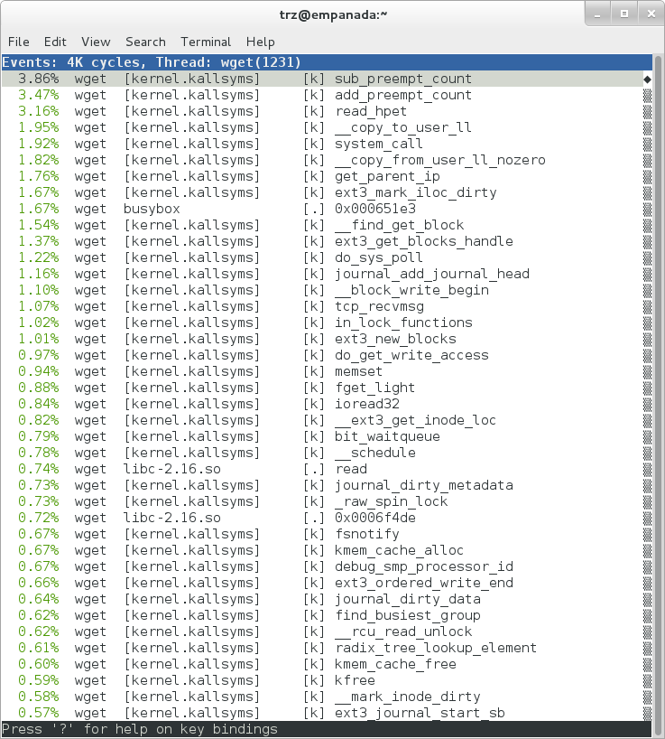
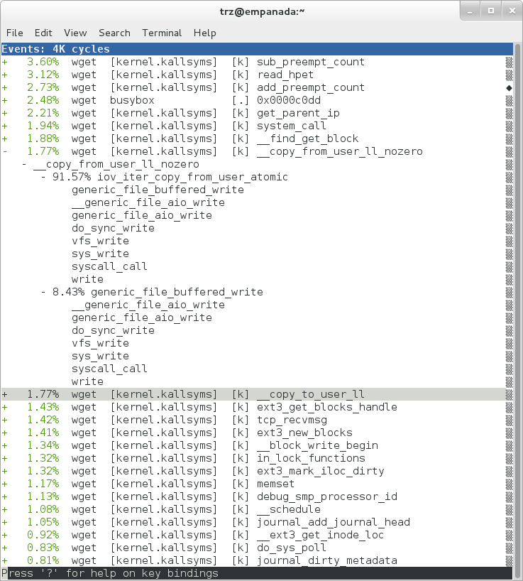
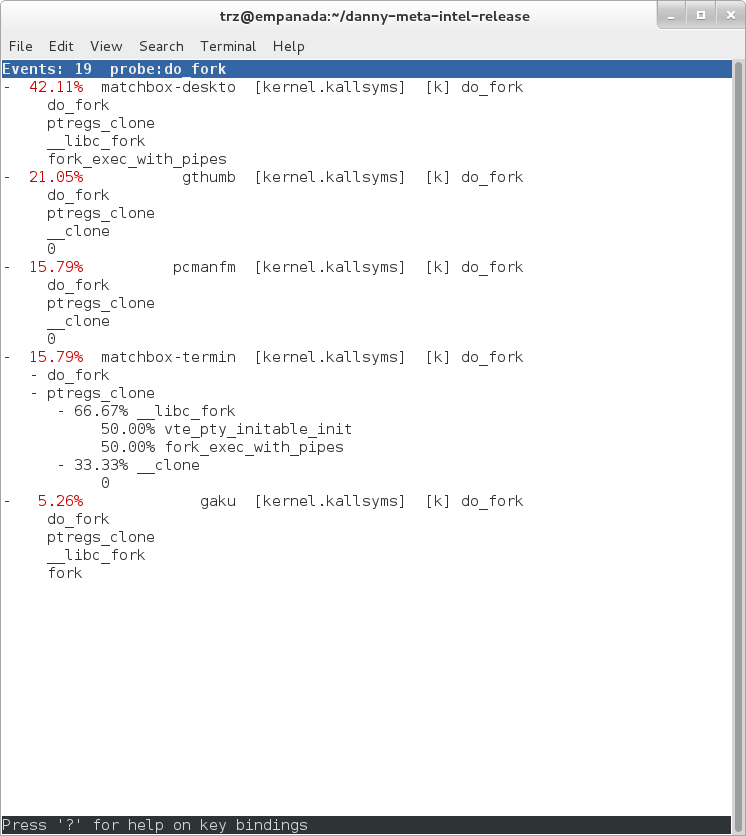
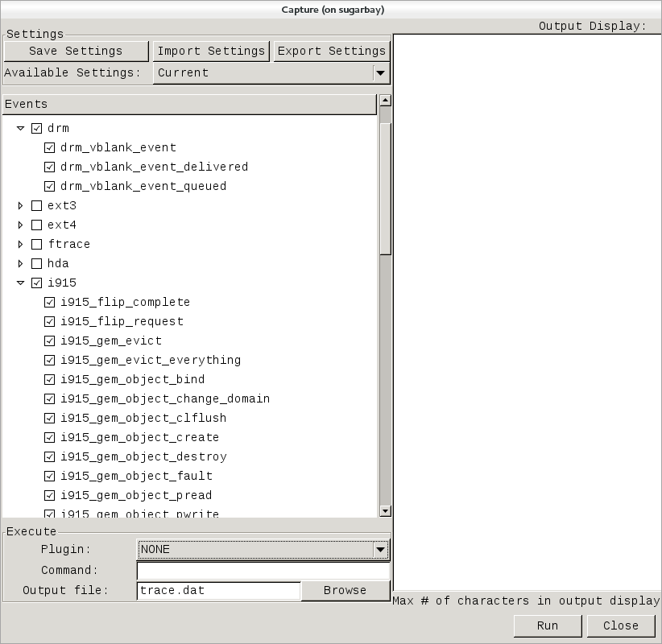
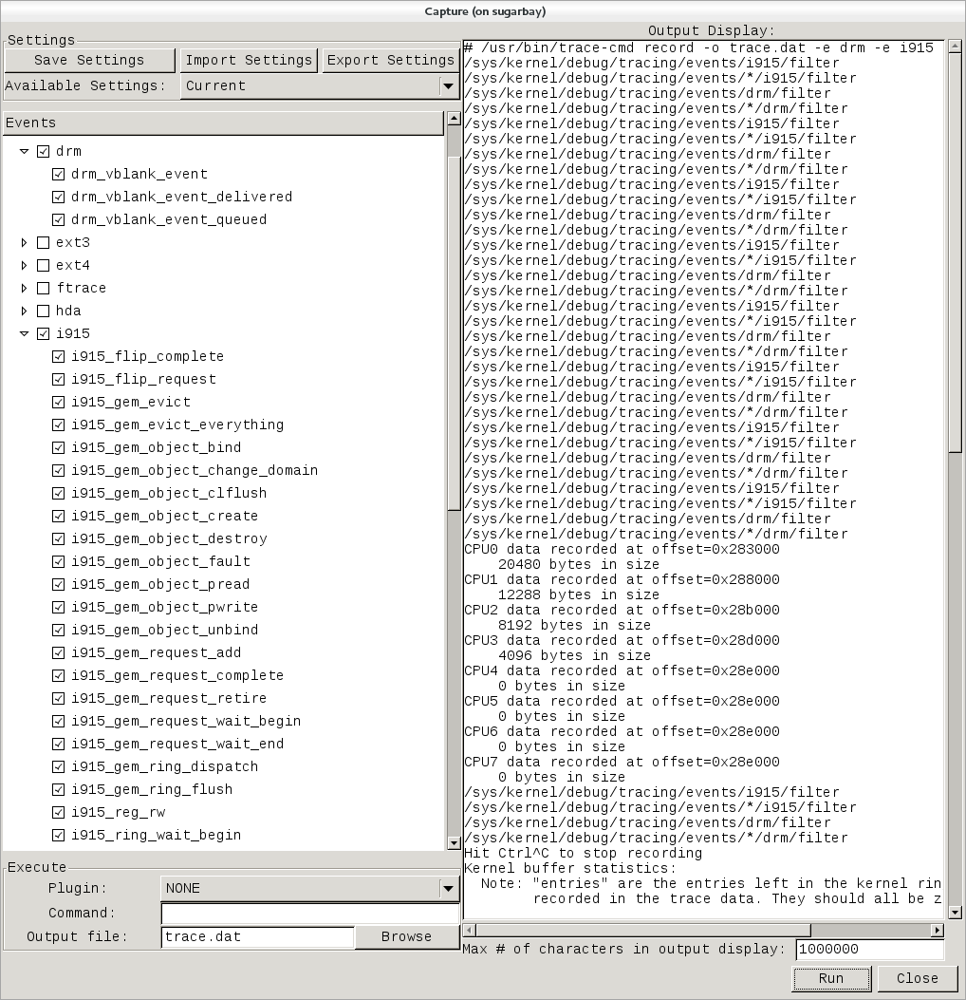
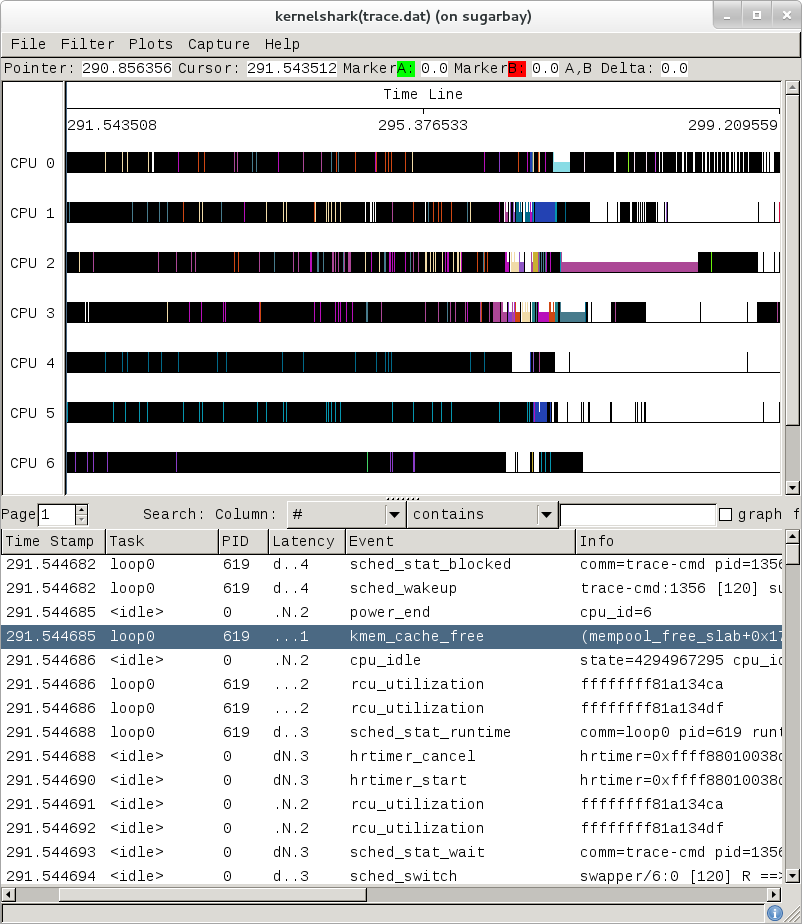
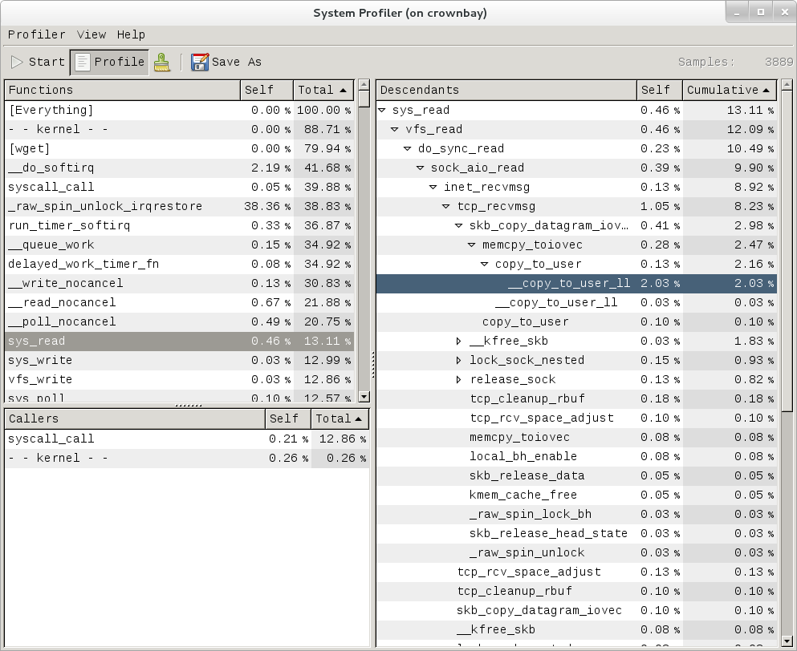
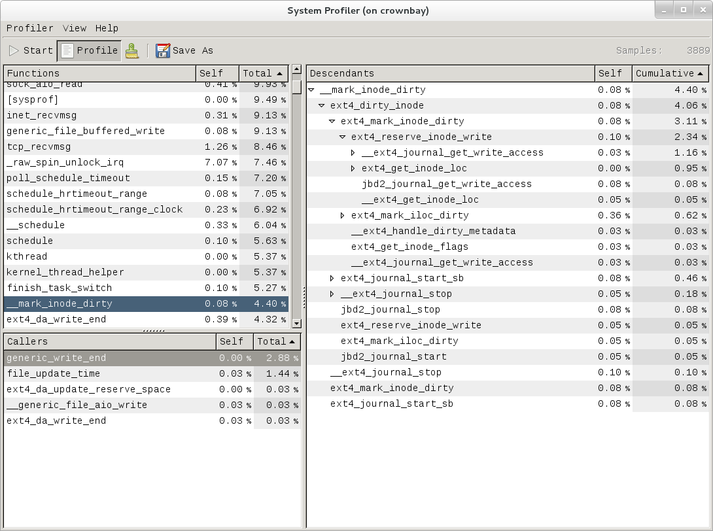

3 Utilizzo di Base (con esempi) per ciascuno dei Tool di Tracing di Yocto
Questo capitolo presenta esempi di utilizzo di base per ciascuno dei tool di tracing.
3.1 perf
Lo tool perf è lo strumento di profilazione e tracing [tracciamento] incluso nel kernel Linux.
Non lasciatevi ingannare dal fatto che faccia parte del kernel: non serve solo per tracciare e profilare il kernel stesso. È possibile utilizzarlo per tracciare e profilare il solo kernel, ma anche per profilare applicazioni specifiche separatamente (con o senza contesto kernel), e persino per tracciare e profilare simultaneamente il kernel e tutte le applicazioni presenti sul sistema, ottenendo così una visione completa di ciò che sta accadendo.
Per molti aspetti, perf si propone di essere un superset di tutti i tool di tracciamento e profilazione attualmente disponibili in Linux, inclusi tutti gli altri strumenti descritti in questa guida. Negli ultimi due anni, perf ha integrato gran parte delle funzionalità di questi altri strumenti e, allo stesso tempo, questi ultimi hanno rimosso ampie porzioni delle loro funzionalità precedenti, sostituendole con chiamate alle funzionalità equivalenti ora implementate dal sottosistema perf. È probabile che a un certo punto questi altri strumenti diventeranno completamente obsoleti e scompariranno. Fino ad allora, tratteremo questi altri strumenti in queste pagine e, in molti casi, mostreremo come ottenere gli stessi risultati con perf e gli altri tool quando ciò si rivela utile.
La descrizione seguente illustra alcuni dei metodi più comuni con cui probabilmente si vorrà vorrete utilizzare il tool; la documentazione completa è disponibile all'interno del tool stesso o nelle pagine del manuale perf(1).
3.1.1 Configurazione di perf
Per questa sezione, daremo per scontato che sia stata già eseguito la configurazione di base descritta nella sezione "Configurazione Generale".
In particolare, si otterrà il massimo da perf se si profila un'immagine creata con quanto segue in un configuration file:
INHIBIT_PACKAGE_STRIP = "1"
perf viene eseguito principalmente sul sistema target. È possibile archiviare i dati di profilazione e copiarli sull'host per l'analisi, ma per il resto di questo documento si presuppone che si sia connessi all'host tramite SSH ed si eseguiranno i comandi perf sul sistema target.
3.1.2 Utilizzo di Base di perf
Il tool perf è praticamente autoesplicativo. Per ricordare i comandi disponibili, basta digitare perf, che mostrerà l'utilizzo di base insieme ai sottocomandi disponibili:
root@crownbay:~# perf
usage: perf [--version] [--help] COMMAND [ARGS]
The most commonly used perf commands are:
annotate Read perf.data (created by perf record) and display annotated code
archive Create archive with object files with build-ids found in perf.data file
bench General framework for benchmark suites
buildid-cache Manage build-id cache.
buildid-list List the buildids in a perf.data file
diff Read two perf.data files and display the differential profile
evlist List the event names in a perf.data file
inject Filter to augment the events stream with additional information
kmem Tool to trace/measure kernel memory(slab) properties
kvm Tool to trace/measure kvm guest os
list List all symbolic event types
lock Analyze lock events
probe Define new dynamic tracepoints
record Run a command and record its profile into perf.data
report Read perf.data (created by perf record) and display the profile
sched Tool to trace/measure scheduler properties (latencies)
script Read perf.data (created by perf record) and display trace output
stat Run a command and gather performance counter statistics
test Runs sanity tests.
timechart Tool to visualize total system behavior during a workload
top System profiling tool.
See 'perf help COMMAND' for more information on a specific command.
3.1.2.1 Utilizzo di perf per la Profilazione di Base
Come semplice caso di test, profilamo il comando wget di un file piuttosto grande, un caso minimamente interessante perché include aspetti di I/O sia di file che di rete e, almeno nel caso delle immagini Yocto standard, è implementato come parte di BusyBox, quindi i metodi che utilizziamo per analizzarlo possono essere usati in modo simile a tutta la gamma di applet BusyBox supportate in Yocto:
root@crownbay:~# rm linux-2.6.19.2.tar.bz2; \
wget https://downloads.yoctoproject.org/mirror/sources/linux-2.6.19.2.tar.bz2
Il modo più rapido e semplice per ottenere dati generali di base su cosa sta succedendo per un particolare carico di lavoro è profilarlo usando perf stat. Questo comando esegue un'analisi delle prestazioni utilizzando alcuni contatori predefiniti e visualizza la somma dei valori al termine dell'esecuzione:
root@crownbay:~# perf stat wget https://downloads.yoctoproject.org/mirror/sources/linux-2.6.19.2.tar.bz2
Connecting to downloads.yoctoproject.org (140.211.169.59:80)
linux-2.6.19.2.tar.b 100% |***************************************************| 41727k 0:00:00 ETA
Performance counter stats for 'wget https://downloads.yoctoproject.org/mirror/sources/linux-2.6.19.2.tar.bz2':
4597.223902 task-clock # 0.077 CPUs utilized
23568 context-switches # 0.005 M/sec
68 CPU-migrations # 0.015 K/sec
241 page-faults # 0.052 K/sec
3045817293 cycles # 0.663 GHz
<not supported> stalled-cycles-frontend
<not supported> stalled-cycles-backend
858909167 instructions # 0.28 insns per cycle
165441165 branches # 35.987 M/sec
19550329 branch-misses # 11.82% of all branches
59.836627620 seconds time elapsed
Un test così semplice non sempre fornisce risultati interessanti, ma a volte sì (bug report Slow write speed on live images with denzil).
Inoltre, si noti che perf stat non è limitato a un set fisso di contatori: praticamente qualsiasi evento elencato nell'output di perf list può essere conteggiato da perf stat. Ad esempio, supponiamo di voler visualizzare un riepilogo di tutti gli eventi relativi all'allocazione/liberazione della memoria del kernel, insieme ai cache hit e ai cache miss:
root@crownbay:~# perf stat -e kmem:* -e cache-references -e cache-misses wget https://downloads.yoctoproject.org/mirror/sources/linux-2.6.19.2.tar.bz2
Connecting to downloads.yoctoproject.org (140.211.169.59:80)
linux-2.6.19.2.tar.b 100% |***************************************************| 41727k 0:00:00 ETA
Performance counter stats for 'wget https://downloads.yoctoproject.org/mirror/sources/linux-2.6.19.2.tar.bz2':
5566 kmem:kmalloc
125517 kmem:kmem_cache_alloc
0 kmem:kmalloc_node
0 kmem:kmem_cache_alloc_node
34401 kmem:kfree
69920 kmem:kmem_cache_free
133 kmem:mm_page_free
41 kmem:mm_page_free_batched
11502 kmem:mm_page_alloc
11375 kmem:mm_page_alloc_zone_locked
0 kmem:mm_page_pcpu_drain
0 kmem:mm_page_alloc_extfrag
66848602 cache-references
2917740 cache-misses # 4.365 % of all cache refs
44.831023415 seconds time elapsed
Come si può vedere, perf stat ci offre un modo semplice e veloce per ottenere una panoramica di ciò che potrebbe accadere in relazione a una serie di eventi, ma normalmente avremmo bisogno di maggiori dettagli per comprendere appieno la situazione e poter intervenire in modo efficace.
Per approfondire ulteriormente, possiamo utilizzare perf record / perf report, che raccolgono i dati di profilazione e li presentano tramite un'interfaccia utente interattiva basata su testo (oppure semplicemente come testo se specifichiamo --stdio a perf report).
Come primo tentativo di profilazione di questo carico di lavoro, eseguiremo semplicemente perf record, passandogli il carico di lavoro che vogliamo profilare (tutto ciò che segue perf record e le eventuali opzioni di perf che gli passiamo - in questo caso nessuna, verrà eseguito in una nuova shell). perf raccoglie campioni fino alla terminazione del processo e li registra in un file chiamato perf.data nella directory di lavoro corrente:
root@crownbay:~# perf record wget https://downloads.yoctoproject.org/mirror/sources/linux-2.6.19.2.tar.bz2
Connecting to downloads.yoctoproject.org (140.211.169.59:80)
linux-2.6.19.2.tar.b 100% |************************************************| 41727k 0:00:00 ETA
[ perf record: Woken up 1 times to write data ]
[ perf record: Captured and wrote 0.176 MB perf.data (~7700 samples) ]
Per visualizzare i risultati in un'interfaccia utente testuale (tui), è sufficiente eseguire perf report, che leggerà il file perf.data nella directory di lavoro corrente e visualizzerà i risultati in un'interfaccia utente interattiva:
root@crownbay:~# perf report


Lo screenshot qui sopra mostra un profilo "piatto", con una voce per ogni "bucket" corrispondente alle funzioni profilate durante l'esecuzione del profilo, ordinate dalla più frequente alla meno frequente (perf offre opzioni per ordinare in vari modi e con diverse chiavi, nonché per visualizzare solo le voci al di sopra di una determinata soglia e così via - consultare la documentazione di perf per maggiori dettagli). Si noti che questo include sia le funzioni dello spazio utente (voci contenenti [.]) sia le funzioni del kernel attribuite al processo (voci contenenti [k]). perf dispone di modificatori da riga di comando che possono essere utilizzati per limitare la profilazione allo spazio kernel o allo spazio utente, tra le altre opzioni.
Si noti inoltre che il report sopra riportato mostra una voce per busybox, ovvero l'eseguibile che implementa wget in Yocto, ma che invece di un nome di funzione utile, in quella voce viene visualizzato un valore esadecimale poco leggibile. I passaggi seguenti mostreranno come risolvere questo problema.
Prima di procedere, però, proviamo a eseguire un profilo diverso, uno che mostri qualcosa di un po' più interessante. L'unica differenza tra il nuovo profilo e il precedente è l'aggiunta dell'opzione -g, che registrerà non solo l'indirizzo di una funzione campionata, ma anche l'intera catena di chiamate a quella funzione:
root@crownbay:~# perf record -g wget https://downloads.yoctoproject.org/mirror/sources/linux-2.6.19.2.tar.bz2
Connecting to downloads.yoctoproject.org (140.211.169.59:80)
linux-2.6.19.2.tar.b 100% |************************************************| 41727k 0:00:00 ETA
[ perf record: Woken up 3 times to write data ]
[ perf record: Captured and wrote 0.652 MB perf.data (~28476 samples) ]
root@crownbay:~# perf report

Utilizzando la visualizzazione del grafico delle chiamate, possiamo vedere non solo quali funzioni hanno impiegato più tempo, ma anche un riepilogo di come sono state chiamate e possiamo imparare qualcosa su come il programma interagisce con il kernel.
Notate che ogni voce nella schermata precedente ora contiene un + sul lato sinistro. Questo significa che possiamo espandere la voce e analizzare in dettaglio le catene di chiamate che alimentano quella voce. Premendo Enter su una qualsiasi di esse, si espanderà la catena di chiamate (è anche possibile premere E per espanderle tutte contemporaneamente o C per comprimerle tutte).
Nella schermata qui sopra, abbiamo attivato la voce __copy_to_user_ll() e diversi sotto-nodi fino in fondo. Questo ci permette di vedere quali catene di chiamate hanno contribuito alla funzione __copy_to_user_ll() profilata, che ha contribuito per l'1,77% al profilo totale.
Per spiegare brevemente queste catene di chiamate, pensiamo a cosa succede a un livello generale quando si esegue wget per scaricare un file dalla rete. In pratica, i dati arrivano al kernel tramite la connessione di rete (socket) e vengono passati al programma in spazio utente wget (che in realtà fa parte di BusyBox, ma questo non è importante per ora), il quale prende i buffer che il kernel gli passa e li scrive su un file su disco per salvarli.
La parte di questo processo che stiamo esaminando negli stack di chiamate sopra riportati è quella in cui il kernel passa i dati letti dal socket a wget, ovvero una copy-to-user.
Si noti inoltre che anche in questo caso il valore esadecimale viene visualizzato nello stack di chiamate, qui nella funzione sys_clock_gettime() espansa. Più avanti vedremo che si risolve in una chiamata di funzione in spazio utente in BusyBox.


Lo screenshot sopra mostra l'altra metà del percorso dei dati: dai buffer in spazio utente del programma wget al disco. Per trasferire i buffer su disco, il programma wget esegue una write(2), che effettua una copy-from-user al kernel, il quale poi si occupa, tramite un percorso indiretto (probabilmente presente anche da qualche parte nei dati di profilo), di trasferire i dati in modo sicuro su disco.
Ora che abbiamo visto la struttura di base dei dati del profilo e le nozioni fondamentali su come estrarne informazioni utili, torniamo al compito principale e cerchiamo di capire dove viene impiegato il tempo nel programma che stiamo profilando, wget. Ricordiamo che wget è implementato come applet in BusyBox, quindi, sebbene il nome del processo sia wget, l'eseguibile che ci interessa è busybox. Pertanto, espandiamo la prima voce contenente BusyBox:

Anche in questo caso, prima di espandere la voce, abbiamo notato che la funzione era etichettata con un valore esadecimale anziché con un simbolo, come avviene per la maggior parte delle voci del kernel. Espandere la voce BusyBox non migliora la situazione.
Il problema è che perf non riesce a trovare le informazioni sui simboli per il binario busybox, che vengono rimosse dal sistema di build Yocto.
Un modo per aggirare il problema è inserire quanto segue in un configuration file durante la creazione dell'immagine:
INHIBIT_PACKAGE_STRIP = "1"
Tuttavia, abbiamo già un'immagine con i binari rimossi, quindi cosa possiamo fare per far sì che perf risolva i simboli? Fondamentalmente, dobbiamo installare le informazioni di debug per il pacchetto BusyBox.
Per generare le informazioni di debug per i pacchetti nell'immagine, possiamo aggiungere dbg-pkgs a EXTRA_IMAGE_FEATURES in build/conf/local.conf. Ad esempio:
EXTRA_IMAGE_FEATURES:append = " dbg-pkgs"
Inoltre, per generare il tipo di informazioni di debug che perf comprende, dobbiamo anche impostare PACKAGE_DEBUG_SPLIT_STYLE in un configuration file:
PACKAGE_DEBUG_SPLIT_STYLE = 'debug-file-directory'
Una volta fatto ciò, possiamo installare le informazioni di debug per BusyBox. I pacchetti di debug, una volta creati, si troveranno in build/tmp/deploy/rpm/* sul sistema host. Individuare il file busybox-dbg-...rpm e copiarlo nel target. Ad esempio:
[trz@empanada core2]$ scp /home/trz/yocto/crownbay-tracing-dbg/build/tmp/deploy/rpm/core2_32/busybox-dbg-1.20.2-r2.core2_32.rpm root@192.168.1.31:
busybox-dbg-1.20.2-r2.core2_32.rpm 100% 1826KB 1.8MB/s 00:01
Ora installiamo il pacchetto RPM di debug sul sistema target:
root@crownbay:~# rpm -i busybox-dbg-1.20.2-r2.core2_32.rpm
Ora che le informazioni di debug sono installate, vediamo che le voci di BusyBox visualizzano le loro funzioni in forma simbolica:

Se espandiamo una delle voci e premiamo Enter su un nodo foglia, ci viene mostrato un menu di azioni che possiamo intraprendere per ottenere maggiori informazioni relative a quella voce:

Una di queste azioni ci permette di visualizzare una vista che mostra una panoramica delle funzioni profilate incentrata su BusyBox (in questo caso abbiamo anche espanso tutti i nodi usando il tasto E):

Infine, possiamo vedere che ora che le informazioni di debug di BusyBox sono installate, il simbolo precedentemente non risolto nella voce "sys_clock_gettime()" menzionata in precedenza è ora risolto e mostra che la chiamata di sistema sys_clock_gettime, che era la fonte del 6,75% dell'overhead di copy-to-user, è stata avviata dalla funzione BusyBox handle_input():

Al livello più basso Per entrare nel dettaglio, possiamo scendere al livello assembly e vedere quali istruzioni hanno causato il maggior overhead in una funzione. Premendo Enter sulla funzione udhcpc_main, ci viene nuovamente mostrato un menu:

Selezionando Annotate udhcpc_main, otteniamo un elenco dettagliato delle percentuali per istruzione per la funzione udhcpc_main. Dal display, possiamo vedere che oltre il 50% del tempo impiegato in questa funzione è occupato da un paio di test e dallo spostamento di una costante (1) in un registro:

Come introduzione al tracing [tracciamento], proviamo un altro profilo utilizzando un contatore diverso, diverso dal valore predefinito cycles.
L'infrastruttura di tracing e profilazione in Linux si è unificata in modo tale da consentirci di utilizzare lo stesso strumento con un set di contatori completamente diverso, non solo con i contatori hardware standard a cui gli strumenti tradizionali erano costretti a limitarsi (gli strumenti tradizionali ora possono effettivamente sfruttare le maggiori possibilità a loro disposizione e, in alcuni casi, lo hanno già fatto, come accennato in precedenza).
Possiamo ottenere un elenco degli eventi disponibili che possono essere utilizzati per profilare un carico di lavoro tramite perf list:
root@crownbay:~# perf list
List of pre-defined events (to be used in -e):
cpu-cycles OR cycles [Hardware event]
stalled-cycles-frontend OR idle-cycles-frontend [Hardware event]
stalled-cycles-backend OR idle-cycles-backend [Hardware event]
instructions [Hardware event]
cache-references [Hardware event]
cache-misses [Hardware event]
branch-instructions OR branches [Hardware event]
branch-misses [Hardware event]
bus-cycles [Hardware event]
ref-cycles [Hardware event]
cpu-clock [Software event]
task-clock [Software event]
page-faults OR faults [Software event]
minor-faults [Software event]
major-faults [Software event]
context-switches OR cs [Software event]
cpu-migrations OR migrations [Software event]
alignment-faults [Software event]
emulation-faults [Software event]
L1-dcache-loads [Hardware cache event]
L1-dcache-load-misses [Hardware cache event]
L1-dcache-prefetch-misses [Hardware cache event]
L1-icache-loads [Hardware cache event]
L1-icache-load-misses [Hardware cache event]
.
.
.
rNNN [Raw hardware event descriptor]
cpu/t1=v1[,t2=v2,t3 ...]/modifier [Raw hardware event descriptor]
(see 'perf list --help' on how to encode it)
mem:<addr>[:access] [Hardware breakpoint]
sunrpc:rpc_call_status [Tracepoint event]
sunrpc:rpc_bind_status [Tracepoint event]
sunrpc:rpc_connect_status [Tracepoint event]
sunrpc:rpc_task_begin [Tracepoint event]
skb:kfree_skb [Tracepoint event]
skb:consume_skb [Tracepoint event]
skb:skb_copy_datagram_iovec [Tracepoint event]
net:net_dev_xmit [Tracepoint event]
net:net_dev_queue [Tracepoint event]
net:netif_receive_skb [Tracepoint event]
net:netif_rx [Tracepoint event]
napi:napi_poll [Tracepoint event]
sock:sock_rcvqueue_full [Tracepoint event]
sock:sock_exceed_buf_limit [Tracepoint event]
udp:udp_fail_queue_rcv_skb [Tracepoint event]
hda:hda_send_cmd [Tracepoint event]
hda:hda_get_response [Tracepoint event]
hda:hda_bus_reset [Tracepoint event]
scsi:scsi_dispatch_cmd_start [Tracepoint event]
scsi:scsi_dispatch_cmd_error [Tracepoint event]
scsi:scsi_eh_wakeup [Tracepoint event]
drm:drm_vblank_event [Tracepoint event]
drm:drm_vblank_event_queued [Tracepoint event]
drm:drm_vblank_event_delivered [Tracepoint event]
random:mix_pool_bytes [Tracepoint event]
random:mix_pool_bytes_nolock [Tracepoint event]
random:credit_entropy_bits [Tracepoint event]
gpio:gpio_direction [Tracepoint event]
gpio:gpio_value [Tracepoint event]
block:block_rq_abort [Tracepoint event]
block:block_rq_requeue [Tracepoint event]
block:block_rq_issue [Tracepoint event]
block:block_bio_bounce [Tracepoint event]
block:block_bio_complete [Tracepoint event]
block:block_bio_backmerge [Tracepoint event]
.
.
writeback:writeback_wake_thread [Tracepoint event]
writeback:writeback_wake_forker_thread [Tracepoint event]
writeback:writeback_bdi_register [Tracepoint event]
.
.
writeback:writeback_single_inode_requeue [Tracepoint event]
writeback:writeback_single_inode [Tracepoint event]
kmem:kmalloc [Tracepoint event]
kmem:kmem_cache_alloc [Tracepoint event]
kmem:mm_page_alloc [Tracepoint event]
kmem:mm_page_alloc_zone_locked [Tracepoint event]
kmem:mm_page_pcpu_drain [Tracepoint event]
kmem:mm_page_alloc_extfrag [Tracepoint event]
vmscan:mm_vmscan_kswapd_sleep [Tracepoint event]
vmscan:mm_vmscan_kswapd_wake [Tracepoint event]
vmscan:mm_vmscan_wakeup_kswapd [Tracepoint event]
vmscan:mm_vmscan_direct_reclaim_begin [Tracepoint event]
.
.
module:module_get [Tracepoint event]
module:module_put [Tracepoint event]
module:module_request [Tracepoint event]
sched:sched_kthread_stop [Tracepoint event]
sched:sched_wakeup [Tracepoint event]
sched:sched_wakeup_new [Tracepoint event]
sched:sched_process_fork [Tracepoint event]
sched:sched_process_exec [Tracepoint event]
sched:sched_stat_runtime [Tracepoint event]
rcu:rcu_utilization [Tracepoint event]
workqueue:workqueue_queue_work [Tracepoint event]
workqueue:workqueue_execute_end [Tracepoint event]
signal:signal_generate [Tracepoint event]
signal:signal_deliver [Tracepoint event]
timer:timer_init [Tracepoint event]
timer:timer_start [Tracepoint event]
timer:hrtimer_cancel [Tracepoint event]
timer:itimer_state [Tracepoint event]
timer:itimer_expire [Tracepoint event]
irq:irq_handler_entry [Tracepoint event]
irq:irq_handler_exit [Tracepoint event]
irq:softirq_entry [Tracepoint event]
irq:softirq_exit [Tracepoint event]
irq:softirq_raise [Tracepoint event]
printk:console [Tracepoint event]
task:task_newtask [Tracepoint event]
task:task_rename [Tracepoint event]
syscalls:sys_enter_socketcall [Tracepoint event]
syscalls:sys_exit_socketcall [Tracepoint event]
.
.
.
syscalls:sys_enter_unshare [Tracepoint event]
syscalls:sys_exit_unshare [Tracepoint event]
raw_syscalls:sys_enter [Tracepoint event]
raw_syscalls:sys_exit [Tracepoint event]
Solo un sottoinsieme di questi sarebbe di nostro interesse quando esaminiamo questo carico di lavoro, quindi scegliamo i sottosistemi più probabili (identificati dalla stringa prima dei due punti negli eventi Tracepoint) ed eseguiamo un perf stat utilizzando solo i caratteri jolly di questi sottosistemi:
root@crownbay:~# perf stat -e skb:* -e net:* -e napi:* -e sched:* -e workqueue:* -e irq:* -e syscalls:* wget https://downloads.yoctoproject.org/mirror/sources/linux-2.6.19.2.tar.bz2
Performance counter stats for 'wget https://downloads.yoctoproject.org/mirror/sources/linux-2.6.19.2.tar.bz2':
23323 skb:kfree_skb
0 skb:consume_skb
49897 skb:skb_copy_datagram_iovec
6217 net:net_dev_xmit
6217 net:net_dev_queue
7962 net:netif_receive_skb
2 net:netif_rx
8340 napi:napi_poll
0 sched:sched_kthread_stop
0 sched:sched_kthread_stop_ret
3749 sched:sched_wakeup
0 sched:sched_wakeup_new
0 sched:sched_switch
29 sched:sched_migrate_task
0 sched:sched_process_free
1 sched:sched_process_exit
0 sched:sched_wait_task
0 sched:sched_process_wait
0 sched:sched_process_fork
1 sched:sched_process_exec
0 sched:sched_stat_wait
2106519415641 sched:sched_stat_sleep
0 sched:sched_stat_iowait
147453613 sched:sched_stat_blocked
12903026955 sched:sched_stat_runtime
0 sched:sched_pi_setprio
3574 workqueue:workqueue_queue_work
3574 workqueue:workqueue_activate_work
0 workqueue:workqueue_execute_start
0 workqueue:workqueue_execute_end
16631 irq:irq_handler_entry
16631 irq:irq_handler_exit
28521 irq:softirq_entry
28521 irq:softirq_exit
28728 irq:softirq_raise
1 syscalls:sys_enter_sendmmsg
1 syscalls:sys_exit_sendmmsg
0 syscalls:sys_enter_recvmmsg
0 syscalls:sys_exit_recvmmsg
14 syscalls:sys_enter_socketcall
14 syscalls:sys_exit_socketcall
.
.
.
16965 syscalls:sys_enter_read
16965 syscalls:sys_exit_read
12854 syscalls:sys_enter_write
12854 syscalls:sys_exit_write
.
.
.
58.029710972 seconds time elapsed
Scegliamo uno di questi tracepoint e diciamo a perf di eseguire un profilo utilizzandolo come evento di campionamento:
root@crownbay:~# perf record -g -e sched:sched_wakeup wget https://downloads.yoctoproject.org/mirror/sources/linux-2.6.19.2.tar.bz2

Lo screenshot qui sopra mostra i risultati dell'esecuzione di un profilo utilizzando il tracepoint sched:sched_switch, che mostra i costi relativi dei vari percorsi verso sched_wakeup (si noti che sched_wakeup è il nome del tracepoint: è effettivamente definito all'interno di ttwu_do_wakeup(), il che spiega il nome della funzione effettivamente visualizzato nel profilo):
/*
* Mark the task runnable and perform wakeup-preemption.
*/
static void
ttwu_do_wakeup(struct rq *rq, struct task_struct *p, int wake_flags)
{
trace_sched_wakeup(p, true);
.
.
.
}
Un paio delle catene di chiamate più interessanti sono espanse e visualizzate sopra, in pratica alcuni percorsi di ricezione di rete che presumibilmente finiscono per risvegliare wget (BusyBox) quando i dati di rete sono pronti [ready].
Si noti che, poiché i tracepoint vengono normalmente utilizzati per il tracing, il periodo di campionamento predefinito per i tracepoint è 1, ovvero perf effettuerà un campionamento a ogni occorrenza dell'evento (questo valore può essere modificato utilizzando l'opzione -c). Ciò è in contrasto con i contatori hardware, come ad esempio il contatore hardware predefinito cycles utilizzato per la normale profilazione, dove i periodi di campionamento sono molto più elevati (nell'ordine delle migliaia) perché la profilazione dovrebbe avere un overhead il più basso possibile e il campionamento a ogni ciclo sarebbe eccessivamente oneroso.
3.1.2.2 Utilizzo di perf per il Tracing di Base
La profilazione è un ottimo strumento per risolvere molti problemi o per ottenere una visione d'insieme di ciò che accade a un carico di lavoro o all'interno del sistema. Tuttavia, per definizione, si tratta di un'approssimazione, come suggerisce il termine più importante ad essa associato: sampling [campionamento]. Da un lato, consente di ottenere un'immagine rappresentativa di ciò che accade nel sistema in modo economico, ma dall'altro, questa economicità ne limita l'utilità quando i dati suggeriscono la necessità di un'analisi più approfondita per scoprire cosa sta realmente accadendo. In questi casi, l'unico modo per capire cosa sta realmente succedendo è analizzare (o riassumere in modo più intelligente) i singoli passaggi che contribuiscono al comportamento di livello superiore rivelato dai dati di profilazione a grana grossa.
A titolo di esempio concreto, possiamo tracciare tutti gli eventi che riteniamo pertinenti al nostro carico di lavoro:
root@crownbay:~# perf record -g -e skb:* -e net:* -e napi:* -e sched:sched_switch -e sched:sched_wakeup -e irq:*
-e syscalls:sys_enter_read -e syscalls:sys_exit_read -e syscalls:sys_enter_write -e syscalls:sys_exit_write
wget https://downloads.yoctoproject.org/mirror/sources/linux-2.6.19.2.tar.bz2
Possiamo visualizzare l'output di traccia grezzo utilizzando perf script senza argomenti:
root@crownbay:~# perf script
perf 1262 [000] 11624.857082: sys_exit_read: 0x0
perf 1262 [000] 11624.857193: sched_wakeup: comm=migration/0 pid=6 prio=0 success=1 target_cpu=000
wget 1262 [001] 11624.858021: softirq_raise: vec=1 [action=TIMER]
wget 1262 [001] 11624.858074: softirq_entry: vec=1 [action=TIMER]
wget 1262 [001] 11624.858081: softirq_exit: vec=1 [action=TIMER]
wget 1262 [001] 11624.858166: sys_enter_read: fd: 0x0003, buf: 0xbf82c940, count: 0x0200
wget 1262 [001] 11624.858177: sys_exit_read: 0x200
wget 1262 [001] 11624.858878: kfree_skb: skbaddr=0xeb248d80 protocol=0 location=0xc15a5308
wget 1262 [001] 11624.858945: kfree_skb: skbaddr=0xeb248000 protocol=0 location=0xc15a5308
wget 1262 [001] 11624.859020: softirq_raise: vec=1 [action=TIMER]
wget 1262 [001] 11624.859076: softirq_entry: vec=1 [action=TIMER]
wget 1262 [001] 11624.859083: softirq_exit: vec=1 [action=TIMER]
wget 1262 [001] 11624.859167: sys_enter_read: fd: 0x0003, buf: 0xb7720000, count: 0x0400
wget 1262 [001] 11624.859192: sys_exit_read: 0x1d7
wget 1262 [001] 11624.859228: sys_enter_read: fd: 0x0003, buf: 0xb7720000, count: 0x0400
wget 1262 [001] 11624.859233: sys_exit_read: 0x0
wget 1262 [001] 11624.859573: sys_enter_read: fd: 0x0003, buf: 0xbf82c580, count: 0x0200
wget 1262 [001] 11624.859584: sys_exit_read: 0x200
wget 1262 [001] 11624.859864: sys_enter_read: fd: 0x0003, buf: 0xb7720000, count: 0x0400
wget 1262 [001] 11624.859888: sys_exit_read: 0x400
wget 1262 [001] 11624.859935: sys_enter_read: fd: 0x0003, buf: 0xb7720000, count: 0x0400
wget 1262 [001] 11624.859944: sys_exit_read: 0x400
Questo ci fornisce una sequenza dettagliata e con timestamp degli eventi che si sono verificati all'interno del carico di lavoro in relazione a tali eventi.
Per molti aspetti, la profilazione può essere considerata un sottoinsieme del tracing: teoricamente, se si dispone di un insieme di eventi di tracing sufficiente a catturare tutti gli aspetti importanti di un carico di lavoro, è possibile ricavare qualsiasi risultato o visualizzazione ottenibile con un'esecuzione di profilazione.
Un altro aspetto della profilazione tradizionale è che, pur essendo potente sotto molti punti di vista, è limitata dalla granularità dei dati sottostanti. Gli strumenti di profilazione offrono vari modi per ordinare e presentare i dati di esempio, rendendoli molto più utili e adatti alla sperimentazione da parte dell'utente, ma in definitiva non possono essere utilizzati in modo aperto per estrarre dati che semplicemente non sono presenti, poiché concettualmente la maggior parte di essi viene scartata.
I dati di tracciamento dettagliati e completi offrono tuttavia l'opportunità di manipolare e presentare le informazioni raccolte durante un'esecuzione di tracciamento in un'infinità di modi.
Un altro modo di vedere la cosa è che i contatori 'primitive' possono essere utilizzati solo in un numero limitato di modi per generare output interessanti; per ottenere qualcosa di più complesso di un semplice conteggio è necessaria una certa quantità di logica aggiuntiva, che in genere è specifica per il problema in questione. Ad esempio, se volessimo utilizzare un 'counter' che corrisponda al valore della differenza di tempo tra il momento in cui un processo è stato programmato per essere eseguito su un processore e il momento in cui è stato effettivamente eseguito, non ci aspetteremmo che un tale contatore esista di per sé, ma potremmo derivarne uno chiamato, ad esempio, wakeup_latency e usarlo per estrarre una visione utile di quella metrica dai dati di tracciamento. Allo stesso modo, non possiamo davvero capire con i normali strumenti di profilazione quanti dati ogni processo sul sistema legge e scrive, né quante di queste operazioni di lettura e scrittura falliscono completamente. Se disponessimo di dati di tracciamento sufficienti, con gli strumenti giusti potremmo facilmente estrarre e presentare tali informazioni, ma per farlo avremmo bisogno di qualcosa di diverso dai semplici strumenti di profilazione preconfezionati.
Fortunatamente, esiste un modo generico per gestire tali esigenze, chiamato "programming languages" [linguaggi di programmazione]. Rendere i linguaggi di programmazione facilmente disponibili per l'applicazione a tali problemi, dato lo specifico formato dei dati, è chiamato 'programming language binding' per quei dati e quel linguaggio. perf supporta due binding di linguaggi di programmazione, uno per Python e uno per Perl.
Ora che abbiamo i dati di traccia in perf.data, possiamo usare perf script -g per generare uno script di base con gestori per gli eventi di lettura/scrittura in entrata/uscita che abbiamo registrato:
root@crownbay:~# perf script -g python
generated Python script: perf-script.py
Lo script di base crea semplicemente una funzione Python per ogni tipo di evento presente nel file perf.data. Il corpo di ogni funzione si limita a stampare il nome dell'evento insieme ai suoi parametri. Ad esempio:
def net__netif_rx(event_name, context, common_cpu,
common_secs, common_nsecs, common_pid, common_comm,
skbaddr, len, name):
print_header(event_name, common_cpu, common_secs, common_nsecs,
common_pid, common_comm)
print "skbaddr=%u, len=%u, name=%s\n" % (skbaddr, len, name),
Possiamo eseguire direttamente questo script per stampare tutti gli eventi contenuti nel file perf.data:
root@crownbay:~# perf script -s perf-script.py
in trace_begin
syscalls__sys_exit_read 0 11624.857082795 1262 perf nr=3, ret=0
sched__sched_wakeup 0 11624.857193498 1262 perf comm=migration/0, pid=6, prio=0, success=1, target_cpu=0
irq__softirq_raise 1 11624.858021635 1262 wget vec=TIMER
irq__softirq_entry 1 11624.858074075 1262 wget vec=TIMER
irq__softirq_exit 1 11624.858081389 1262 wget vec=TIMER
syscalls__sys_enter_read 1 11624.858166434 1262 wget nr=3, fd=3, buf=3213019456, count=512
syscalls__sys_exit_read 1 11624.858177924 1262 wget nr=3, ret=512
skb__kfree_skb 1 11624.858878188 1262 wget skbaddr=3945041280, location=3243922184, protocol=0
skb__kfree_skb 1 11624.858945608 1262 wget skbaddr=3945037824, location=3243922184, protocol=0
irq__softirq_raise 1 11624.859020942 1262 wget vec=TIMER
irq__softirq_entry 1 11624.859076935 1262 wget vec=TIMER
irq__softirq_exit 1 11624.859083469 1262 wget vec=TIMER
syscalls__sys_enter_read 1 11624.859167565 1262 wget nr=3, fd=3, buf=3077701632, count=1024
syscalls__sys_exit_read 1 11624.859192533 1262 wget nr=3, ret=471
syscalls__sys_enter_read 1 11624.859228072 1262 wget nr=3, fd=3, buf=3077701632, count=1024
syscalls__sys_exit_read 1 11624.859233707 1262 wget nr=3, ret=0
syscalls__sys_enter_read 1 11624.859573008 1262 wget nr=3, fd=3, buf=3213018496, count=512
syscalls__sys_exit_read 1 11624.859584818 1262 wget nr=3, ret=512
syscalls__sys_enter_read 1 11624.859864562 1262 wget nr=3, fd=3, buf=3077701632, count=1024
syscalls__sys_exit_read 1 11624.859888770 1262 wget nr=3, ret=1024
syscalls__sys_enter_read 1 11624.859935140 1262 wget nr=3, fd=3, buf=3077701632, count=1024
syscalls__sys_exit_read 1 11624.859944032 1262 wget nr=3, ret=1024
Questo di per sé non è molto utile; dopotutto, possiamo ottenere praticamente lo stesso risultato eseguendo perf script senza argomenti nella stessa directory del file perf.data.
Possiamo tuttavia sostituire le istruzioni print nei corpi delle funzioni generate con qualsiasi cosa desideriamo, rendendole così infinitamente più utili.
A titolo di semplice esempio, sostituiamo le istruzioni print nei corpi delle funzioni con una semplice funzione che non fa altro che incrementare un contatore per ogni evento. Quando il programma viene eseguito su un file perf.data, ogni volta che viene rilevato un particolare evento, il contatore corrispondente viene incrementato. Ad esempio:
def net__netif_rx(event_name, context, common_cpu,
common_secs, common_nsecs, common_pid, common_comm,
skbaddr, len, name):
inc_counts(event_name)
Ogni funzione di gestione degli eventi nel codice generato viene modificata per fare ciò. Per comodità, definiamo una funzione comune chiamata inc_counts() che viene richiamata da ogni gestore; inc_counts() si limita a contare ogni evento utilizzando l'hash counts, una funzione hash specializzata che esegue l'autovivificazione in stile Perl, una funzionalità estremamente utile per i tipi di aggregazione multilivello comunemente utilizzati nell'elaborazione delle tracce (vedere la documentazione di perf sul binding per il linguaggio Python per i dettagli):
counts = autodict()
def inc_counts(event_name):
try:
counts[event_name] += 1
except TypeError:
counts[event_name] = 1
Infine, al termine dell'esecuzione dell'elaborazione della traccia, vogliamo stampare il risultato di tutti i conteggi per evento. A tale scopo, utilizziamo la funzione speciale trace_end():
def trace_end():
for event_name, count in counts.iteritems():
print "%-40s %10s\n" % (event_name, count)
Il risultato finale è un riepilogo di tutti gli eventi registrati nella traccia:
skb__skb_copy_datagram_iovec 13148
irq__softirq_entry 4796
irq__irq_handler_exit 3805
irq__softirq_exit 4795
syscalls__sys_enter_write 8990
net__net_dev_xmit 652
skb__kfree_skb 4047
sched__sched_wakeup 1155
irq__irq_handler_entry 3804
irq__softirq_raise 4799
net__net_dev_queue 652
syscalls__sys_enter_read 17599
net__netif_receive_skb 1743
syscalls__sys_exit_read 17598
net__netif_rx 2
napi__napi_poll 1877
syscalls__sys_exit_write 8990
Si noti che si tratta praticamente delle stesse informazioni che otteniamo da perf stat, il che supporta in parte l'idea menzionata in precedenza, ovvero che, con i dati di traccia appropriati, è possibile ricavare da essi riepiloghi di profilazione di livello superiore.
Documentazione sull'utilizzo di 'perf script' Python binding.
3.1.2.3 Tracing e Profilazione a Livello di Sistema
Gli esempi finora presentati si sono concentrati sul tracciamento di un programma o di un carico di lavoro specifico: in altre parole, ogni esecuzione di profilazione ha specificato il programma da profilare nella riga di comando, ad esempio perf record wget ....
È anche possibile, e in molti casi più interessante, eseguire un profilo o un tracciamento a livello di sistema mentre il carico di lavoro viene eseguito in una shell separata.
Per eseguire il tracciamento o la profilazione a livello di sistema, si utilizza in genere l'opzione -a con perf record.
Per dimostrarlo, aprire una finestra e avviare il profilo utilizzando il flag -a (premere Ctrl-C per interrompere il tracing):
root@crownbay:~# perf record -g -a
^C[ perf record: Woken up 6 times to write data ]
[ perf record: Captured and wrote 1.400 MB perf.data (~61172 samples) ]
In un'altra finestra, eseguire il test wget:
root@crownbay:~# wget https://downloads.yoctoproject.org/mirror/sources/linux-2.6.19.2.tar.bz2
Connecting to downloads.yoctoproject.org (140.211.169.59:80)
linux-2.6.19.2.tar.b 100% \|*******************************\| 41727k 0:00:00 ETA
Qui vediamo voci non solo per il carico di wget, ma anche per altri processi in esecuzione sul sistema:

Nell'immagine qui sopra, possiamo vedere catene di chiamate che hanno origine in libc e una catena di chiamate da Xorg che dimostra che stiamo usando un driver X proprietario nello spazio utente (notare la presenza di PVR e di altri simboli non risolvibili nella catena di chiamate Xorg espansa).
Notare inoltre che nell'immagine qui sopra sono presenti voci sia per lo spazio kernel che per lo spazio utente. Possiamo anche indicare a perf di concentrarsi sullo spazio utente, fornendo un modificatore, in questo caso u, al contatore hardware cycles durante la registrazione di un profilo:
root@crownbay:~# perf record -g -a -e cycles:u
^C[ perf record: Woken up 2 times to write data ]
[ perf record: Captured and wrote 0.376 MB perf.data (~16443 samples) ]

Nella schermata precedente, notiamo che vengono visualizzate solo le voci relative allo spazio utente ([.])
Infine, possiamo premere Enter su un nodo foglia e selezionare la voce di menu Zoom into DSO per visualizzare solo le voci associate a uno specifico DSO. Nella schermata seguente, abbiamo ingrandito il DSO libc, che mostra tutte le voci associate al DSO libc-xxx.so.

Possiamo anche utilizzare l'opzione -a a livello di sistema per eseguire il tracciamento a livello di sistema. Qui tracceremo un paio di eventi dello scheduler:
root@crownbay:~# perf record -a -e sched:sched_switch -e sched:sched_wakeup
^C[ perf record: Woken up 38 times to write data ]
[ perf record: Captured and wrote 9.780 MB perf.data (~427299 samples) ]
Possiamo visualizzare l'output grezzo utilizzando perf script senza argomenti:
root@crownbay:~# perf script
perf 1383 [001] 6171.460045: sched_wakeup: comm=kworker/1:1 pid=21 prio=120 success=1 target_cpu=001
perf 1383 [001] 6171.460066: sched_switch: prev_comm=perf prev_pid=1383 prev_prio=120 prev_state=R+ ==> next_comm=kworker/1:1 next_pid=21 next_prio=120
kworker/1:1 21 [001] 6171.460093: sched_switch: prev_comm=kworker/1:1 prev_pid=21 prev_prio=120 prev_state=S ==> next_comm=perf next_pid=1383 next_prio=120
swapper 0 [000] 6171.468063: sched_wakeup: comm=kworker/0:3 pid=1209 prio=120 success=1 target_cpu=000
swapper 0 [000] 6171.468107: sched_switch: prev_comm=swapper/0 prev_pid=0 prev_prio=120 prev_state=R ==> next_comm=kworker/0:3 next_pid=1209 next_prio=120
kworker/0:3 1209 [000] 6171.468143: sched_switch: prev_comm=kworker/0:3 prev_pid=1209 prev_prio=120 prev_state=S ==> next_comm=swapper/0 next_pid=0 next_prio=120
perf 1383 [001] 6171.470039: sched_wakeup: comm=kworker/1:1 pid=21 prio=120 success=1 target_cpu=001
perf 1383 [001] 6171.470058: sched_switch: prev_comm=perf prev_pid=1383 prev_prio=120 prev_state=R+ ==> next_comm=kworker/1:1 next_pid=21 next_prio=120
kworker/1:1 21 [001] 6171.470082: sched_switch: prev_comm=kworker/1:1 prev_pid=21 prev_prio=120 prev_state=S ==> next_comm=perf next_pid=1383 next_prio=120
perf 1383 [001] 6171.480035: sched_wakeup: comm=kworker/1:1 pid=21 prio=120 success=1 target_cpu=001
3.1.2.3.1 Filtraggio
Notare che ci sono molti eventi che non hanno nulla a che fare con ciò che ci interessa, ovvero gli eventi che pianificano l'avvio e la disattivazione di perf o che lo riattivano. Possiamo eliminarli utilizzando l'opzione --filter: per ogni evento specificato con -e, possiamo aggiungere --filter per filtrare gli eventi di traccia che contengono campi con valori specifici:
root@crownbay:~# perf record -a -e sched:sched_switch --filter 'next_comm != perf && prev_comm != perf' -e sched:sched_wakeup --filter 'comm != perf'
^C[ perf record: Woken up 38 times to write data ]
[ perf record: Captured and wrote 9.688 MB perf.data (~423279 samples) ]
root@crownbay:~# perf script
swapper 0 [000] 7932.162180: sched_switch: prev_comm=swapper/0 prev_pid=0 prev_prio=120 prev_state=R ==> next_comm=kworker/0:3 next_pid=1209 next_prio=120
kworker/0:3 1209 [000] 7932.162236: sched_switch: prev_comm=kworker/0:3 prev_pid=1209 prev_prio=120 prev_state=S ==> next_comm=swapper/0 next_pid=0 next_prio=120
perf 1407 [001] 7932.170048: sched_wakeup: comm=kworker/1:1 pid=21 prio=120 success=1 target_cpu=001
perf 1407 [001] 7932.180044: sched_wakeup: comm=kworker/1:1 pid=21 prio=120 success=1 target_cpu=001
perf 1407 [001] 7932.190038: sched_wakeup: comm=kworker/1:1 pid=21 prio=120 success=1 target_cpu=001
perf 1407 [001] 7932.200044: sched_wakeup: comm=kworker/1:1 pid=21 prio=120 success=1 target_cpu=001
perf 1407 [001] 7932.210044: sched_wakeup: comm=kworker/1:1 pid=21 prio=120 success=1 target_cpu=001
perf 1407 [001] 7932.220044: sched_wakeup: comm=kworker/1:1 pid=21 prio=120 success=1 target_cpu=001
swapper 0 [001] 7932.230111: sched_wakeup: comm=kworker/1:1 pid=21 prio=120 success=1 target_cpu=001
swapper 0 [001] 7932.230146: sched_switch: prev_comm=swapper/1 prev_pid=0 prev_prio=120 prev_state=R ==> next_comm=kworker/1:1 next_pid=21 next_prio=120
kworker/1:1 21 [001] 7932.230205: sched_switch: prev_comm=kworker/1:1 prev_pid=21 prev_prio=120 prev_state=S ==> next_comm=swapper/1 next_pid=0 next_prio=120
swapper 0 [000] 7932.326109: sched_wakeup: comm=kworker/0:3 pid=1209 prio=120 success=1 target_cpu=000
swapper 0 [000] 7932.326171: sched_switch: prev_comm=swapper/0 prev_pid=0 prev_prio=120 prev_state=R ==> next_comm=kworker/0:3 next_pid=1209 next_prio=120
kworker/0:3 1209 [000] 7932.326214: sched_switch: prev_comm=kworker/0:3 prev_pid=1209 prev_prio=120 prev_state=S ==> next_comm=swapper/0 next_pid=0 next_prio=120
In questo caso, abbiamo filtrato tutti gli eventi che contengono perf nei campi comm, comm_prev o comm_next. Notare che sono ancora registrati eventi per perf, ma notate che questi eventi non hanno il valore perf per i campi filtrati. Per filtrare completamente tutto ciò che riguarda perf sarà necessario un lavoro più complesso, ma ai fini di questa dimostrazione sull'utilizzo dei filtri, è sufficiente.
3.1.2.4 Utilizzo di Tracepoint Dinamici
perf non è limitato al set fisso di tracepoint statici elencati da perf list. Gli utenti possono anche aggiungere i propri tracepoint "dinamici" in qualsiasi punto del kernel. Ad esempio, supponiamo di voler definire un nostro tracepoint su do_fork(). Possiamo farlo usando il sottocomando perf probe di perf:
root@crownbay:~# perf probe do_fork
Added new event:
probe:do_fork (on do_fork)
You can now use it in all perf tools, such as:
perf record -e probe:do_fork -aR sleep 1
L'aggiunta di un nuovo tracepoint tramite perf probe genera un evento con tutti i file e il formato previsti in /sys/kernel/debug/tracing/events, proprio come per i tracepoint statici (come discusso più dettagliatamente nella sezione relativa al sottosistema degli eventi di traccia):
root@crownbay:/sys/kernel/debug/tracing/events/probe/do_fork# ls -al
drwxr-xr-x 2 root root 0 Oct 28 11:42 .
drwxr-xr-x 3 root root 0 Oct 28 11:42 ..
-rw-r--r-- 1 root root 0 Oct 28 11:42 enable
-rw-r--r-- 1 root root 0 Oct 28 11:42 filter
-r--r--r-- 1 root root 0 Oct 28 11:42 format
-r--r--r-- 1 root root 0 Oct 28 11:42 id
root@crownbay:/sys/kernel/debug/tracing/events/probe/do_fork# cat format
name: do_fork
ID: 944
format:
field:unsigned short common_type; offset:0; size:2; signed:0;
field:unsigned char common_flags; offset:2; size:1; signed:0;
field:unsigned char common_preempt_count; offset:3; size:1; signed:0;
field:int common_pid; offset:4; size:4; signed:1;
field:int common_padding; offset:8; size:4; signed:1;
field:unsigned long __probe_ip; offset:12; size:4; signed:0;
print fmt: "(%lx)", REC->__probe_ip
Possiamo elencare tutti i tracepoint dinamici attualmente esistenti:
root@crownbay:~# perf probe -l
probe:do_fork (on do_fork)
probe:schedule (on schedule)
Registriamo a livello di sistema (sleep 30 è un trucco per registrare a livello di sistema, ma in pratica non fa nulla e poi si riattiva dopo 30 secondi):
root@crownbay:~# perf record -g -a -e probe:do_fork sleep 30
[ perf record: Woken up 1 times to write data ]
[ perf record: Captured and wrote 0.087 MB perf.data (~3812 samples) ]
Usando perf script possiamo vedere ogni evento do_fork che si è attivato:
root@crownbay:~# perf script
# ========
# captured on: Sun Oct 28 11:55:18 2012
# hostname : crownbay
# os release : 3.4.11-yocto-standard
# perf version : 3.4.11
# arch : i686
# nrcpus online : 2
# nrcpus avail : 2
# cpudesc : Intel(R) Atom(TM) CPU E660 @ 1.30GHz
# cpuid : GenuineIntel,6,38,1
# total memory : 1017184 kB
# cmdline : /usr/bin/perf record -g -a -e probe:do_fork sleep 30
# event : name = probe:do_fork, type = 2, config = 0x3b0, config1 = 0x0, config2 = 0x0, excl_usr = 0, excl_kern
= 0, id = { 5, 6 }
# HEADER_CPU_TOPOLOGY info available, use -I to display
# ========
#
matchbox-deskto 1197 [001] 34211.378318: do_fork: (c1028460)
matchbox-deskto 1295 [001] 34211.380388: do_fork: (c1028460)
pcmanfm 1296 [000] 34211.632350: do_fork: (c1028460)
pcmanfm 1296 [000] 34211.639917: do_fork: (c1028460)
matchbox-deskto 1197 [001] 34217.541603: do_fork: (c1028460)
matchbox-deskto 1299 [001] 34217.543584: do_fork: (c1028460)
gthumb 1300 [001] 34217.697451: do_fork: (c1028460)
gthumb 1300 [001] 34219.085734: do_fork: (c1028460)
gthumb 1300 [000] 34219.121351: do_fork: (c1028460)
gthumb 1300 [001] 34219.264551: do_fork: (c1028460)
pcmanfm 1296 [000] 34219.590380: do_fork: (c1028460)
matchbox-deskto 1197 [001] 34224.955965: do_fork: (c1028460)
matchbox-deskto 1306 [001] 34224.957972: do_fork: (c1028460)
matchbox-termin 1307 [000] 34225.038214: do_fork: (c1028460)
matchbox-termin 1307 [001] 34225.044218: do_fork: (c1028460)
matchbox-termin 1307 [000] 34225.046442: do_fork: (c1028460)
matchbox-deskto 1197 [001] 34237.112138: do_fork: (c1028460)
matchbox-deskto 1311 [001] 34237.114106: do_fork: (c1028460)
gaku 1312 [000] 34237.202388: do_fork: (c1028460)
E usando perf report sullo stesso file, possiamo vedere i grafici delle chiamate dall'avvio di alcuni programmi durante quei 30 secondi:


3.1.3 Documentazione di perf
Le versioni online delle pagine di manuale per i comandi discussi in questa sezione sono disponibili qui:
Documentazione sull'utilizzo di 'perf script' Python binding.
Il livello superiore perf(1) manual page.
Normalmente, si dovrebbe essere in grado di aprire le pagine del manuale tramite perf stesso, ad esempio perf help o perf help record.
Per installare le pagine del manuale di perf sul sistema target, modificare la configurazione come segue:
IMAGE_INSTALL:append = " perf perf-doc"
DISTRO_FEATURES:append = " api-documentation"
Le pagine del manuale in formato testo, insieme ad altri file, come una serie di esempi, si trovano anche nella directory perf dell'albero del kernel:
tools/perf/Documentation
Esiste anche un utile tutorial su perf sul wiki di perf che approfondisce alcuni argomenti in modo più dettagliato rispetto a quanto facciamo qui: perf Tutorial
3.2 ftrace
"ftrace" si riferisce letteralmente al "ftrace function tracer" [tracer di funzioni ftrace], ma in realtà comprende diversi tracer correlati, insieme all'infrastruttura che tutti utilizzano.
3.2.1 Configurazione di ftrace
Per questa sezione, daremo per scontato che sia stata già eseguito la configurazione di base descritta nella sezione "Configurazione Generale".
ftrace, trace-cmd e KernelShark vengono eseguiti sul sistema target e sono pronti all'uso fin da subito: non è necessaria alcuna configurazione aggiuntiva. Per il resto di questa sezione, si presume che si sia connessi all'host tramite SSH e che si esegua ftrace sul sistema target. KernelShark è un'applicazione con interfaccia grafica e, utilizzando l'opzione -X a ssh, è possibile eseguire l'interfaccia grafica di KernelShark sul sistema target e visualizzarla in remoto sull'host, se lo si desidera.
3.2.2 Utilizzo di base di ftrace
"ftrace" si riferisce essenzialmente a tutto ciò che è incluso nella directory /tracing del filesystem debugfs montato (Yocto segue la convenzione standard e lo monta in /sys/kernel/debug). Tutti i file presenti in /sys/kernel/debug/tracing su un sistema Yocto sono:
root@sugarbay:/sys/kernel/debug/tracing# ls
README kprobe_events trace
available_events kprobe_profile trace_clock
available_filter_functions options trace_marker
available_tracers per_cpu trace_options
buffer_size_kb printk_formats trace_pipe
buffer_total_size_kb saved_cmdlines tracing_cpumask
current_tracer set_event tracing_enabled
dyn_ftrace_total_info set_ftrace_filter tracing_on
enabled_functions set_ftrace_notrace tracing_thresh
events set_ftrace_pid
free_buffer set_graph_function
I file sopra elencati hanno diverse funzioni: alcuni sono direttamente correlati ai tracer stessi, altri vengono utilizzati per impostare le opzioni di tracciamento e altri ancora contengono l'output di tracciamento quando un tracer è attivo. Alcune funzioni possono essere intuite dal nome, altre necessitano di una spiegazione; in ogni caso, analizzeremo alcuni dei file qui di seguito, ma per una spiegazione degli altri, si prega di consultare la documentazione di ftrace.
Iniziamo esaminando alcuni dei tracer integrati disponibili.
Il file``available_tracers`` elenca l'insieme dei tracer disponibili:
root@sugarbay:/sys/kernel/debug/tracing# cat available_tracers
blk function_graph function nop
Il file current_tracer contiene il tracer attualmente attivo:
root@sugarbay:/sys/kernel/debug/tracing# cat current_tracer
nop
L'elenco di current_tracer sopra riportato mostra che è attivo il tracer nop, il che significa che al momento non è attivo alcun tracer.
Scrivendo uno dei tracer disponibili in current_tracer, il tracer specificato diventa il tracer corrente:
root@sugarbay:/sys/kernel/debug/tracing# echo function > current_tracer
root@sugarbay:/sys/kernel/debug/tracing# cat current_tracer
function
Il comando precedente imposta il tracer corrente su function. Questo tracer traccia ogni chiamata di funzione nel kernel e la rende disponibile come contenuto del file trace. La lettura del file trace elenca le chiamate di funzione attualmente memorizzate nel buffer che sono state tracciate dal tracer di funzione:
root@sugarbay:/sys/kernel/debug/tracing# cat trace | less
# tracer: function
#
# entries-in-buffer/entries-written: 310629/766471 #P:8
#
# _-----=> irqs-off
# / _----=> need-resched
# | / _---=> hardirq/softirq
# || / _--=> preempt-depth
# ||| / delay
# TASK-PID CPU# |||| TIMESTAMP FUNCTION
# | | | |||| | |
<idle>-0 [004] d..1 470.867169: ktime_get_real <-intel_idle
<idle>-0 [004] d..1 470.867170: getnstimeofday <-ktime_get_real
<idle>-0 [004] d..1 470.867171: ns_to_timeval <-intel_idle
<idle>-0 [004] d..1 470.867171: ns_to_timespec <-ns_to_timeval
<idle>-0 [004] d..1 470.867172: smp_apic_timer_interrupt <-apic_timer_interrupt
<idle>-0 [004] d..1 470.867172: native_apic_mem_write <-smp_apic_timer_interrupt
<idle>-0 [004] d..1 470.867172: irq_enter <-smp_apic_timer_interrupt
<idle>-0 [004] d..1 470.867172: rcu_irq_enter <-irq_enter
<idle>-0 [004] d..1 470.867173: rcu_idle_exit_common.isra.33 <-rcu_irq_enter
<idle>-0 [004] d..1 470.867173: local_bh_disable <-irq_enter
<idle>-0 [004] d..1 470.867173: add_preempt_count <-local_bh_disable
<idle>-0 [004] d.s1 470.867174: tick_check_idle <-irq_enter
<idle>-0 [004] d.s1 470.867174: tick_check_oneshot_broadcast <-tick_check_idle
<idle>-0 [004] d.s1 470.867174: ktime_get <-tick_check_idle
<idle>-0 [004] d.s1 470.867174: tick_nohz_stop_idle <-tick_check_idle
<idle>-0 [004] d.s1 470.867175: update_ts_time_stats <-tick_nohz_stop_idle
<idle>-0 [004] d.s1 470.867175: nr_iowait_cpu <-update_ts_time_stats
<idle>-0 [004] d.s1 470.867175: tick_do_update_jiffies64 <-tick_check_idle
<idle>-0 [004] d.s1 470.867175: _raw_spin_lock <-tick_do_update_jiffies64
<idle>-0 [004] d.s1 470.867176: add_preempt_count <-_raw_spin_lock
<idle>-0 [004] d.s2 470.867176: do_timer <-tick_do_update_jiffies64
<idle>-0 [004] d.s2 470.867176: _raw_spin_lock <-do_timer
<idle>-0 [004] d.s2 470.867176: add_preempt_count <-_raw_spin_lock
<idle>-0 [004] d.s3 470.867177: ntp_tick_length <-do_timer
<idle>-0 [004] d.s3 470.867177: _raw_spin_lock_irqsave <-ntp_tick_length
.
.
.
Ogni riga della traccia sopra riportata mostra cosa stava accadendo nel kernel su una data CPU, con un livello di dettaglio pari a quello delle chiamate di funzione. Ogni voce mostra la funzione chiamata, seguita dal suo chiamante (dopo la freccia).
Il tracer function fornisce un'idea estremamente dettagliata di cosa stava facendo il kernel nel momento in cui è stata acquisita la traccia ed è un ottimo strumento per comprendere il funzionamento dinamico del codice del kernel.
Seguire la catena delle chiamate è un po' più complicato del necessario, ma fortunatamente esiste una variante del tracer function che le visualizza esplicitamente, chiamato tracer function_graph:
root@sugarbay:/sys/kernel/debug/tracing# echo function_graph > current_tracer
root@sugarbay:/sys/kernel/debug/tracing# cat trace | less
tracer: function_graph
CPU DURATION FUNCTION CALLS
| | | | | | |
7) 0.046 us | pick_next_task_fair();
7) 0.043 us | pick_next_task_stop();
7) 0.042 us | pick_next_task_rt();
7) 0.032 us | pick_next_task_fair();
7) 0.030 us | pick_next_task_idle();
7) | _raw_spin_unlock_irq() {
7) 0.033 us | sub_preempt_count();
7) 0.258 us | }
7) 0.032 us | sub_preempt_count();
7) + 13.341 us | } /* __schedule */
7) 0.095 us | } /* sub_preempt_count */
7) | schedule() {
7) | __schedule() {
7) 0.060 us | add_preempt_count();
7) 0.044 us | rcu_note_context_switch();
7) | _raw_spin_lock_irq() {
7) 0.033 us | add_preempt_count();
7) 0.247 us | }
7) | idle_balance() {
7) | _raw_spin_unlock() {
7) 0.031 us | sub_preempt_count();
7) 0.246 us | }
7) | update_shares() {
7) 0.030 us | __rcu_read_lock();
7) 0.029 us | __rcu_read_unlock();
7) 0.484 us | }
7) 0.030 us | __rcu_read_lock();
7) | load_balance() {
7) | find_busiest_group() {
7) 0.031 us | idle_cpu();
7) 0.029 us | idle_cpu();
7) 0.035 us | idle_cpu();
7) 0.906 us | }
7) 1.141 us | }
7) 0.022 us | msecs_to_jiffies();
7) | load_balance() {
7) | find_busiest_group() {
7) 0.031 us | idle_cpu();
.
.
.
4) 0.062 us | msecs_to_jiffies();
4) 0.062 us | __rcu_read_unlock();
4) | _raw_spin_lock() {
4) 0.073 us | add_preempt_count();
4) 0.562 us | }
4) + 17.452 us | }
4) 0.108 us | put_prev_task_fair();
4) 0.102 us | pick_next_task_fair();
4) 0.084 us | pick_next_task_stop();
4) 0.075 us | pick_next_task_rt();
4) 0.062 us | pick_next_task_fair();
4) 0.066 us | pick_next_task_idle();
------------------------------------------
4) kworker-74 => <idle>-0
------------------------------------------
4) | finish_task_switch() {
4) | _raw_spin_unlock_irq() {
4) 0.100 us | sub_preempt_count();
4) 0.582 us | }
4) 1.105 us | }
4) 0.088 us | sub_preempt_count();
4) ! 100.066 us | }
.
.
.
3) | sys_ioctl() {
3) 0.083 us | fget_light();
3) | security_file_ioctl() {
3) 0.066 us | cap_file_ioctl();
3) 0.562 us | }
3) | do_vfs_ioctl() {
3) | drm_ioctl() {
3) 0.075 us | drm_ut_debug_printk();
3) | i915_gem_pwrite_ioctl() {
3) | i915_mutex_lock_interruptible() {
3) 0.070 us | mutex_lock_interruptible();
3) 0.570 us | }
3) | drm_gem_object_lookup() {
3) | _raw_spin_lock() {
3) 0.080 us | add_preempt_count();
3) 0.620 us | }
3) | _raw_spin_unlock() {
3) 0.085 us | sub_preempt_count();
3) 0.562 us | }
3) 2.149 us | }
3) 0.133 us | i915_gem_object_pin();
3) | i915_gem_object_set_to_gtt_domain() {
3) 0.065 us | i915_gem_object_flush_gpu_write_domain();
3) 0.065 us | i915_gem_object_wait_rendering();
3) 0.062 us | i915_gem_object_flush_cpu_write_domain();
3) 1.612 us | }
3) | i915_gem_object_put_fence() {
3) 0.097 us | i915_gem_object_flush_fence.constprop.36();
3) 0.645 us | }
3) 0.070 us | add_preempt_count();
3) 0.070 us | sub_preempt_count();
3) 0.073 us | i915_gem_object_unpin();
3) 0.068 us | mutex_unlock();
3) 9.924 us | }
3) + 11.236 us | }
3) + 11.770 us | }
3) + 13.784 us | }
3) | sys_ioctl() {
Come si vede, la visualizzazione di function_graph è molto più facile da seguire. Inoltre, oltre alle chiamate di funzione e alle parentesi graffe associate, vengono visualizzati anche altri eventi, come gli eventi dello scheduler, nel loro contesto. È possibile includere liberamente qualsiasi punto di tracciamento disponibile nel sottosistema degli eventi di tracciamento descritto nella sezione successiva, semplicemente abilitando tali eventi, che appariranno nel contesto della visualizzazione del grafico delle funzioni. Uno strumento davvero potente per comprendere le dinamiche del kernel.
Si notino anche le varie annotazioni presenti sul lato sinistro della visualizzazione. Ad esempio, se il tempo totale impiegato per l'esecuzione di una determinata funzione supera una certa soglia, sul lato sinistro compare un punto esclamativo o un segno più. Per maggiori dettagli su tutti questi campi, consultate la documentazione di ftrace.
3.2.3 Il sottosistema dei 'trace events'
Una directory particolarmente importante all'interno della directory /sys/kernel/debug/tracing è la sottodirectory events, che contiene la rappresentazione di ogni tracepoint del sistema. Elencando il contenuto della sottodirectory events, vediamo principalmente un altro insieme di sottodirectory:
root@sugarbay:/sys/kernel/debug/tracing# cd events
root@sugarbay:/sys/kernel/debug/tracing/events# ls -al
drwxr-xr-x 38 root root 0 Nov 14 23:19 .
drwxr-xr-x 5 root root 0 Nov 14 23:19 ..
drwxr-xr-x 19 root root 0 Nov 14 23:19 block
drwxr-xr-x 32 root root 0 Nov 14 23:19 btrfs
drwxr-xr-x 5 root root 0 Nov 14 23:19 drm
-rw-r--r-- 1 root root 0 Nov 14 23:19 enable
drwxr-xr-x 40 root root 0 Nov 14 23:19 ext3
drwxr-xr-x 79 root root 0 Nov 14 23:19 ext4
drwxr-xr-x 14 root root 0 Nov 14 23:19 ftrace
drwxr-xr-x 8 root root 0 Nov 14 23:19 hda
-r--r--r-- 1 root root 0 Nov 14 23:19 header_event
-r--r--r-- 1 root root 0 Nov 14 23:19 header_page
drwxr-xr-x 25 root root 0 Nov 14 23:19 i915
drwxr-xr-x 7 root root 0 Nov 14 23:19 irq
drwxr-xr-x 12 root root 0 Nov 14 23:19 jbd
drwxr-xr-x 14 root root 0 Nov 14 23:19 jbd2
drwxr-xr-x 14 root root 0 Nov 14 23:19 kmem
drwxr-xr-x 7 root root 0 Nov 14 23:19 module
drwxr-xr-x 3 root root 0 Nov 14 23:19 napi
drwxr-xr-x 6 root root 0 Nov 14 23:19 net
drwxr-xr-x 3 root root 0 Nov 14 23:19 oom
drwxr-xr-x 12 root root 0 Nov 14 23:19 power
drwxr-xr-x 3 root root 0 Nov 14 23:19 printk
drwxr-xr-x 8 root root 0 Nov 14 23:19 random
drwxr-xr-x 4 root root 0 Nov 14 23:19 raw_syscalls
drwxr-xr-x 3 root root 0 Nov 14 23:19 rcu
drwxr-xr-x 6 root root 0 Nov 14 23:19 rpm
drwxr-xr-x 20 root root 0 Nov 14 23:19 sched
drwxr-xr-x 7 root root 0 Nov 14 23:19 scsi
drwxr-xr-x 4 root root 0 Nov 14 23:19 signal
drwxr-xr-x 5 root root 0 Nov 14 23:19 skb
drwxr-xr-x 4 root root 0 Nov 14 23:19 sock
drwxr-xr-x 10 root root 0 Nov 14 23:19 sunrpc
drwxr-xr-x 538 root root 0 Nov 14 23:19 syscalls
drwxr-xr-x 4 root root 0 Nov 14 23:19 task
drwxr-xr-x 14 root root 0 Nov 14 23:19 timer
drwxr-xr-x 3 root root 0 Nov 14 23:19 udp
drwxr-xr-x 21 root root 0 Nov 14 23:19 vmscan
drwxr-xr-x 3 root root 0 Nov 14 23:19 vsyscall
drwxr-xr-x 6 root root 0 Nov 14 23:19 workqueue
drwxr-xr-x 26 root root 0 Nov 14 23:19 writeback
Ciascuna di queste sottodirectory corrisponde a un "sottosistema" e contiene a sua volta altre sottodirectory, ognuna delle quali corrisponde infine a un tracepoint. Ad esempio, ecco il contenuto del sottosistema kmem:
root@sugarbay:/sys/kernel/debug/tracing/events# cd kmem
root@sugarbay:/sys/kernel/debug/tracing/events/kmem# ls -al
drwxr-xr-x 14 root root 0 Nov 14 23:19 .
drwxr-xr-x 38 root root 0 Nov 14 23:19 ..
-rw-r--r-- 1 root root 0 Nov 14 23:19 enable
-rw-r--r-- 1 root root 0 Nov 14 23:19 filter
drwxr-xr-x 2 root root 0 Nov 14 23:19 kfree
drwxr-xr-x 2 root root 0 Nov 14 23:19 kmalloc
drwxr-xr-x 2 root root 0 Nov 14 23:19 kmalloc_node
drwxr-xr-x 2 root root 0 Nov 14 23:19 kmem_cache_alloc
drwxr-xr-x 2 root root 0 Nov 14 23:19 kmem_cache_alloc_node
drwxr-xr-x 2 root root 0 Nov 14 23:19 kmem_cache_free
drwxr-xr-x 2 root root 0 Nov 14 23:19 mm_page_alloc
drwxr-xr-x 2 root root 0 Nov 14 23:19 mm_page_alloc_extfrag
drwxr-xr-x 2 root root 0 Nov 14 23:19 mm_page_alloc_zone_locked
drwxr-xr-x 2 root root 0 Nov 14 23:19 mm_page_free
drwxr-xr-x 2 root root 0 Nov 14 23:19 mm_page_free_batched
drwxr-xr-x 2 root root 0 Nov 14 23:19 mm_page_pcpu_drain
Vediamo cosa contiene la sottocartella relativa a uno specifico tracepoint, in questo caso quello per kmalloc:
root@sugarbay:/sys/kernel/debug/tracing/events/kmem# cd kmalloc
root@sugarbay:/sys/kernel/debug/tracing/events/kmem/kmalloc# ls -al
drwxr-xr-x 2 root root 0 Nov 14 23:19 .
drwxr-xr-x 14 root root 0 Nov 14 23:19 ..
-rw-r--r-- 1 root root 0 Nov 14 23:19 enable
-rw-r--r-- 1 root root 0 Nov 14 23:19 filter
-r--r--r-- 1 root root 0 Nov 14 23:19 format
-r--r--r-- 1 root root 0 Nov 14 23:19 id
Il file format per il tracepoint descrive l'evento in memoria, che viene utilizzato dai vari strumenti di tracing che ora si avvalgono di questi tracepoint per analizzare l'evento e interpretarlo, insieme a un campo print fmt che consente a strumenti come ftrace di visualizzare l'evento come testo. Il formato dell'evento kmalloc è il seguente:
root@sugarbay:/sys/kernel/debug/tracing/events/kmem/kmalloc# cat format
name: kmalloc
ID: 313
format:
field:unsigned short common_type; offset:0; size:2; signed:0;
field:unsigned char common_flags; offset:2; size:1; signed:0;
field:unsigned char common_preempt_count; offset:3; size:1; signed:0;
field:int common_pid; offset:4; size:4; signed:1;
field:int common_padding; offset:8; size:4; signed:1;
field:unsigned long call_site; offset:16; size:8; signed:0;
field:const void * ptr; offset:24; size:8; signed:0;
field:size_t bytes_req; offset:32; size:8; signed:0;
field:size_t bytes_alloc; offset:40; size:8; signed:0;
field:gfp_t gfp_flags; offset:48; size:4; signed:0;
print fmt: "call_site=%lx ptr=%p bytes_req=%zu bytes_alloc=%zu gfp_flags=%s", REC->call_site, REC->ptr, REC->bytes_req, REC->bytes_alloc,
(REC->gfp_flags) ? __print_flags(REC->gfp_flags, "|", {(unsigned long)(((( gfp_t)0x10u) | (( gfp_t)0x40u) | (( gfp_t)0x80u) | ((
gfp_t)0x20000u) | (( gfp_t)0x02u) | (( gfp_t)0x08u)) | (( gfp_t)0x4000u) | (( gfp_t)0x10000u) | (( gfp_t)0x1000u) | (( gfp_t)0x200u) | ((
gfp_t)0x400000u)), "GFP_TRANSHUGE"}, {(unsigned long)((( gfp_t)0x10u) | (( gfp_t)0x40u) | (( gfp_t)0x80u) | (( gfp_t)0x20000u) | ((
gfp_t)0x02u) | (( gfp_t)0x08u)), "GFP_HIGHUSER_MOVABLE"}, {(unsigned long)((( gfp_t)0x10u) | (( gfp_t)0x40u) | (( gfp_t)0x80u) | ((
gfp_t)0x20000u) | (( gfp_t)0x02u)), "GFP_HIGHUSER"}, {(unsigned long)((( gfp_t)0x10u) | (( gfp_t)0x40u) | (( gfp_t)0x80u) | ((
gfp_t)0x20000u)), "GFP_USER"}, {(unsigned long)((( gfp_t)0x10u) | (( gfp_t)0x40u) | (( gfp_t)0x80u) | (( gfp_t)0x80000u)), GFP_TEMPORARY"},
{(unsigned long)((( gfp_t)0x10u) | (( gfp_t)0x40u) | (( gfp_t)0x80u)), "GFP_KERNEL"}, {(unsigned long)((( gfp_t)0x10u) | (( gfp_t)0x40u)),
"GFP_NOFS"}, {(unsigned long)((( gfp_t)0x20u)), "GFP_ATOMIC"}, {(unsigned long)((( gfp_t)0x10u)), "GFP_NOIO"}, {(unsigned long)((
gfp_t)0x20u), "GFP_HIGH"}, {(unsigned long)(( gfp_t)0x10u), "GFP_WAIT"}, {(unsigned long)(( gfp_t)0x40u), "GFP_IO"}, {(unsigned long)((
gfp_t)0x100u), "GFP_COLD"}, {(unsigned long)(( gfp_t)0x200u), "GFP_NOWARN"}, {(unsigned long)(( gfp_t)0x400u), "GFP_REPEAT"}, {(unsigned
long)(( gfp_t)0x800u), "GFP_NOFAIL"}, {(unsigned long)(( gfp_t)0x1000u), "GFP_NORETRY"}, {(unsigned long)(( gfp_t)0x4000u), "GFP_COMP"},
{(unsigned long)(( gfp_t)0x8000u), "GFP_ZERO"}, {(unsigned long)(( gfp_t)0x10000u), "GFP_NOMEMALLOC"}, {(unsigned long)(( gfp_t)0x20000u),
"GFP_HARDWALL"}, {(unsigned long)(( gfp_t)0x40000u), "GFP_THISNODE"}, {(unsigned long)(( gfp_t)0x80000u), "GFP_RECLAIMABLE"}, {(unsigned
long)(( gfp_t)0x08u), "GFP_MOVABLE"}, {(unsigned long)(( gfp_t)0), "GFP_NOTRACK"}, {(unsigned long)(( gfp_t)0x400000u), "GFP_NO_KSWAPD"},
{(unsigned long)(( gfp_t)0x800000u), "GFP_OTHER_NODE"} ) : "GFP_NOWAIT"
Il file enable nella directory del tracepoint è ciò che consente all'utente (o a strumenti come trace-cmd) di attivare e disattivare il tracepoint. Quando è abilitato, il tracepoint corrispondente inizierà ad apparire nel file trace di ftrace descritto in precedenza. Ad esempio, questo comando attiva il tracepoint kmalloc:
root@sugarbay:/sys/kernel/debug/tracing/events/kmem/kmalloc# echo 1 > enable
Al momento, non siamo interessati al tracer di funzioni o ad altri tracer eventualmente attivi, quindi lo disattiviamo prima. Tuttavia, anche in questo caso, dobbiamo comunque riattivare il tracing per visualizzare gli eventi nel buffer di output:
root@sugarbay:/sys/kernel/debug/tracing# echo nop > current_tracer
root@sugarbay:/sys/kernel/debug/tracing# echo 1 > tracing_on
Ora, se esaminiamo il file trace, non vediamo altro che gli eventi kmalloc che abbiamo appena attivato:
root@sugarbay:/sys/kernel/debug/tracing# cat trace | less
# tracer: nop
#
# entries-in-buffer/entries-written: 1897/1897 #P:8
#
# _-----=> irqs-off
# / _----=> need-resched
# | / _---=> hardirq/softirq
# || / _--=> preempt-depth
# ||| / delay
# TASK-PID CPU# |||| TIMESTAMP FUNCTION
# | | | |||| | |
dropbear-1465 [000] ...1 18154.620753: kmalloc: call_site=ffffffff816650d4 ptr=ffff8800729c3000 bytes_req=2048 bytes_alloc=2048 gfp_flags=GFP_KERNEL
<idle>-0 [000] ..s3 18154.621640: kmalloc: call_site=ffffffff81619b36 ptr=ffff88006d555800 bytes_req=512 bytes_alloc=512 gfp_flags=GFP_ATOMIC
<idle>-0 [000] ..s3 18154.621656: kmalloc: call_site=ffffffff81619b36 ptr=ffff88006d555800 bytes_req=512 bytes_alloc=512 gfp_flags=GFP_ATOMIC
matchbox-termin-1361 [001] ...1 18154.755472: kmalloc: call_site=ffffffff81614050 ptr=ffff88006d5f0e00 bytes_req=512 bytes_alloc=512 gfp_flags=GFP_KERNEL|GFP_REPEAT
Xorg-1264 [002] ...1 18154.755581: kmalloc: call_site=ffffffff8141abe8 ptr=ffff8800734f4cc0 bytes_req=168 bytes_alloc=192 gfp_flags=GFP_KERNEL|GFP_NOWARN|GFP_NORETRY
Xorg-1264 [002] ...1 18154.755583: kmalloc: call_site=ffffffff814192a3 ptr=ffff88001f822520 bytes_req=24 bytes_alloc=32 gfp_flags=GFP_KERNEL|GFP_ZERO
Xorg-1264 [002] ...1 18154.755589: kmalloc: call_site=ffffffff81419edb ptr=ffff8800721a2f00 bytes_req=64 bytes_alloc=64 gfp_flags=GFP_KERNEL|GFP_ZERO
matchbox-termin-1361 [001] ...1 18155.354594: kmalloc: call_site=ffffffff81614050 ptr=ffff88006db35400 bytes_req=576 bytes_alloc=1024 gfp_flags=GFP_KERNEL|GFP_REPEAT
Xorg-1264 [002] ...1 18155.354703: kmalloc: call_site=ffffffff8141abe8 ptr=ffff8800734f4cc0 bytes_req=168 bytes_alloc=192 gfp_flags=GFP_KERNEL|GFP_NOWARN|GFP_NORETRY
Xorg-1264 [002] ...1 18155.354705: kmalloc: call_site=ffffffff814192a3 ptr=ffff88001f822520 bytes_req=24 bytes_alloc=32 gfp_flags=GFP_KERNEL|GFP_ZERO
Xorg-1264 [002] ...1 18155.354711: kmalloc: call_site=ffffffff81419edb ptr=ffff8800721a2f00 bytes_req=64 bytes_alloc=64 gfp_flags=GFP_KERNEL|GFP_ZERO
<idle>-0 [000] ..s3 18155.673319: kmalloc: call_site=ffffffff81619b36 ptr=ffff88006d555800 bytes_req=512 bytes_alloc=512 gfp_flags=GFP_ATOMIC
dropbear-1465 [000] ...1 18155.673525: kmalloc: call_site=ffffffff816650d4 ptr=ffff8800729c3000 bytes_req=2048 bytes_alloc=2048 gfp_flags=GFP_KERNEL
<idle>-0 [000] ..s3 18155.674821: kmalloc: call_site=ffffffff81619b36 ptr=ffff88006d554800 bytes_req=512 bytes_alloc=512 gfp_flags=GFP_ATOMIC
<idle>-0 [000] ..s3 18155.793014: kmalloc: call_site=ffffffff81619b36 ptr=ffff88006d554800 bytes_req=512 bytes_alloc=512 gfp_flags=GFP_ATOMIC
dropbear-1465 [000] ...1 18155.793219: kmalloc: call_site=ffffffff816650d4 ptr=ffff8800729c3000 bytes_req=2048 bytes_alloc=2048 gfp_flags=GFP_KERNEL
<idle>-0 [000] ..s3 18155.794147: kmalloc: call_site=ffffffff81619b36 ptr=ffff88006d555800 bytes_req=512 bytes_alloc=512 gfp_flags=GFP_ATOMIC
<idle>-0 [000] ..s3 18155.936705: kmalloc: call_site=ffffffff81619b36 ptr=ffff88006d555800 bytes_req=512 bytes_alloc=512 gfp_flags=GFP_ATOMIC
dropbear-1465 [000] ...1 18155.936910: kmalloc: call_site=ffffffff816650d4 ptr=ffff8800729c3000 bytes_req=2048 bytes_alloc=2048 gfp_flags=GFP_KERNEL
<idle>-0 [000] ..s3 18155.937869: kmalloc: call_site=ffffffff81619b36 ptr=ffff88006d554800 bytes_req=512 bytes_alloc=512 gfp_flags=GFP_ATOMIC
matchbox-termin-1361 [001] ...1 18155.953667: kmalloc: call_site=ffffffff81614050 ptr=ffff88006d5f2000 bytes_req=512 bytes_alloc=512 gfp_flags=GFP_KERNEL|GFP_REPEAT
Xorg-1264 [002] ...1 18155.953775: kmalloc: call_site=ffffffff8141abe8 ptr=ffff8800734f4cc0 bytes_req=168 bytes_alloc=192 gfp_flags=GFP_KERNEL|GFP_NOWARN|GFP_NORETRY
Xorg-1264 [002] ...1 18155.953777: kmalloc: call_site=ffffffff814192a3 ptr=ffff88001f822520 bytes_req=24 bytes_alloc=32 gfp_flags=GFP_KERNEL|GFP_ZERO
Xorg-1264 [002] ...1 18155.953783: kmalloc: call_site=ffffffff81419edb ptr=ffff8800721a2f00 bytes_req=64 bytes_alloc=64 gfp_flags=GFP_KERNEL|GFP_ZERO
<idle>-0 [000] ..s3 18156.176053: kmalloc: call_site=ffffffff81619b36 ptr=ffff88006d554800 bytes_req=512 bytes_alloc=512 gfp_flags=GFP_ATOMIC
dropbear-1465 [000] ...1 18156.176257: kmalloc: call_site=ffffffff816650d4 ptr=ffff8800729c3000 bytes_req=2048 bytes_alloc=2048 gfp_flags=GFP_KERNEL
<idle>-0 [000] ..s3 18156.177717: kmalloc: call_site=ffffffff81619b36 ptr=ffff88006d555800 bytes_req=512 bytes_alloc=512 gfp_flags=GFP_ATOMIC
<idle>-0 [000] ..s3 18156.399229: kmalloc: call_site=ffffffff81619b36 ptr=ffff88006d555800 bytes_req=512 bytes_alloc=512 gfp_flags=GFP_ATOMIC
dropbear-1465 [000] ...1 18156.399434: kmalloc: call_site=ffffffff816650d4 ptr=ffff8800729c3000 bytes_http://rostedt.homelinux.com/kernelshark/req=2048 bytes_alloc=2048 gfp_flags=GFP_KERNEL
<idle>-0 [000] ..s3 18156.400660: kmalloc: call_site=ffffffff81619b36 ptr=ffff88006d554800 bytes_req=512 bytes_alloc=512 gfp_flags=GFP_ATOMIC
matchbox-termin-1361 [001] ...1 18156.552800: kmalloc: call_site=ffffffff81614050 ptr=ffff88006db34800 bytes_req=576 bytes_alloc=1024 gfp_flags=GFP_KERNEL|GFP_REPEAT
Per disabilitare nuovamente l'evento kmalloc, dobbiamo inviare 0 al file enable:
root@sugarbay:/sys/kernel/debug/tracing/events/kmem/kmalloc# echo 0 > enable
È possibile abilitare un numero qualsiasi di eventi o sottosistemi completi (utilizzando il file enable nella directory del sottosistema) e ottenere un'idea estremamente dettagliata di ciò che accade nel sistema abilitando tutti i tracepoint appropriati.
Diversi strumenti descritti in questa guida svolgono proprio questa funzione, tra cui trace-cmd e KernelShark, che verranno presentati nella sezione successiva.
3.2.4 trace-cmd / KernelShark
trace-cmd è essenzialmente un'interfaccia "wrapper" da riga di comando estesa che nasconde i dettagli di tutti i singoli file in /sys/kernel/debug/tracing, consentendo agli utenti di specificare eventi specifici all'interno della sottocartella /sys/kernel/debug/tracing/events/ e di raccogliere tracce evitando di dover gestire direttamente tali dettagli.
Come ulteriore livello di controllo, KernelShark fornisce un'interfaccia grafica che consente agli utenti di avviare e interrompere le tracce e specificare set di eventi tramite un'interfaccia intuitiva, e di visualizzare l'output sia come eventi di traccia che come visualizzazione grafica per CPU. Utilizza direttamente trace-cmd come strumento interno per realizzare tutto ciò (e, come vedremo, visualizza anche il comando trace-cmd che utilizza).
Per avviare una traccia con KernelShark, si avvia prima questo tool:
root@sugarbay:~# kernelshark
Quindi si apre la finestra di dialogo Capture selezionandola dal menu di KernelShark:
Capture | Record
Si aprirà la seguente finestra di dialogo, che consente di scegliere uno o più eventi (o anche interi sottosistemi) da tracciare:


Notare che si tratta esattamente degli stessi set di eventi descritti nella precedente sezione relativa ai sottosistemi di tracciamento, ed è proprio da qui che trace-cmd li preleva per KernelShark.
Nella schermata precedente, abbiamo deciso di esplorare il sottosistema grafico e quindi abbiamo scelto di tracciare tutti i tracepoints contenuti nei sottosistemi i915 e drm.
Dopo aver fatto ciò, possiamo avviare e interrompere la traccia utilizzando i pulsanti Run e Stop nell'angolo in basso a destra della finestra di dialogo (lo stesso pulsante si trasformerà in 'Stop' dopo l'avvio della traccia):


Notare che il riquadro di destra mostra l'esatta riga di comando trace-cmd utilizzata per eseguire la traccia, insieme ai risultati dell'esecuzione di trace-cmd.
Una volta premuto il pulsante Stop, la visualizzazione grafica si riempie magicamente con una rappresentazione a colori per CPU dei dati di traccia, insieme all'elenco dettagliato degli eventi sottostante:

Ecco un altro esempio, questa volta una visualizzazione risultante dalla traccia di all events:


Il tool è abbastanza intuitivo, ma per informazioni più dettagliate su come navigare tra i dati, consultate il sito web di KernelShark.
3.2.5 Documentazione di ftrace
La documentazione di ftrace si trova nella directory Documentation del kernel:
Documentation/trace/ftrace.txt
Anche la documentazione del sottosistema di tracciamento degli eventi si trova nella directory Documentation del kernel:
Documentation/trace/events.txt
Una serie di articoli sull'utilizzo di ftrace e trace-cmd è disponibile su LWN:
Consultare anche la documentazione di KernelShark' per ulteriori dettagli sull'utilizzo.
Un file README divertente ma utile (una mini-guida al tracing) si trova in /sys/kernel/debug/tracing/README.
3.3 SystemTap
SystemTap è uno strumento di tracing e profiling a livello di sistema basato su script.
Gli script di SystemTap sono programmi simili al C che vengono eseguiti nel kernel per raccogliere/stampare/aggregare dati estratti dal contesto in cui vengono chiamati.
Ad esempio, questa sonda del tutorial di SystemTap stampa una riga ogni volta che un processo sul sistema esegue open() su un file. Per ogni riga, stampa il nome eseguibile del programma che ha aperto il file, insieme al suo PID, e il nome del file aperto (o che ha tentato di aprire), che estrae dalla stringa degli argomenti (argstr) della chiamata di sistema open.
probe syscall.open
{
printf ("%s(%d) open (%s)\n", execname(), pid(), argstr)
}
probe timer.ms(4000) # after 4 seconds
{
exit ()
}
Normalmente, per eseguire questa sonda [probe], è sufficiente installare SystemTap sul sistema che si desidera analizzare ed eseguire direttamente la sonda su tale sistema, ad esempio, supponendo che il nome del file contenente il testo sopra riportato sia trace_open.stp:
# stap trace_open.stp
Ciò che SystemTap fa internamente per eseguire questo probe [sonda] è: 1) analizzare e convertire la sonda in un form equivalente in linguaggio "C", 2) compilare il form "C" in un modulo del kernel, 3) inserire il modulo nel kernel, attivandolo, e 4) raccogliere i dati generati dalla sonda e visualizzarli all'utente.
Per eseguire i passaggi 1 e 2, il programma stap necessita dell'accesso al sistema di compilazione del kernel che ha prodotto il kernel in esecuzione sul sistema sottoposto a sonda [probe]. Nel caso di un tipico sistema embedded (il "target"), il sistema di build del kernel purtroppo non fa in genere parte dell'immagine in esecuzione sul target. Normalmente è disponibile sul sistema "host" che ha prodotto l'immagine target; in questi casi, i passaggi 1 e 2 vengono eseguiti sul sistema host, mentre i passaggi 3 e 4 vengono eseguiti sul sistema target, utilizzando solo il runtime di SystemTap.
Il supporto SystemTap in Yocto presuppone che sul sistema target vengano eseguiti solo i passaggi 3 e 4; è possibile eseguire tutte le operazioni sul sistema target, ma questa sezione considera solo il tipico caso d'uso embedded.
Pertanto, per eseguire uno script SystemTap sul sistema target, è necessario procedere come segue: 1) sul sistema host, compilare la sonda in un modulo del kernel compatibile con il sistema target; 2) copiare il modulo sul sistema target; 3) inserire il modulo nel kernel del sistema target, abilitandolo; e 4) raccogliere i dati generati dalla sonda e visualizzarli all'utente.
3.3.1 Configurazione di SystemTap
Ci sono molti passaggi e dettagli da considerare, ma fortunatamente Yocto include uno script chiamato crosstap che si occupa di questi dettagli, permettendoti di eseguire uno script SystemTap sul sistema remoto, con argomenti se necessario.
Per fare ciò da un host remoto, tuttavia, è necessario avere accesso alla build dell'immagine avviata. Lo script crosstap fornisce i dettagli su come fare se lo si esegue sull'host senza aver prima effettuato una build:
$ crosstap root@192.168.1.88 trace_open.stp
Error: No target kernel build found.
Did you forget to create a local build of your image?
'crosstap' richiede una build SDK locale del sistema target (o una build che includa 'tools-profile') per compilare i moduli del kernel in grado di analizzare il sistema target.
In pratica, ciò significa che si deve fare quanto segue:
Se si sta utilizzando un'immagine precompilata, scaricare i file tarball della release e/o del BSP utilizzati per creare l'immagine.
Se si sta lavorando da sorgenti Git, clonare semplicemente i layer di metadati e BSP necessari per creare l'immagine che si avvierà.
Assicurarsi di essere configurato correttamente per creare una nuova immagine (consultare il file README del BSP e/o la documentazione di base ampiamente disponibile che illustra come creare immagini).
Crea una versione
-sdkdell'immagine, ad esempio:$ bitbake core-image-sato-sdk
Oppure si crea un'immagine senza SDK ma si include gli strumenti di profilazione (aggiungere
tools-profilealla variabile EXTRA_IMAGE_FEATURES):$ bitbake core-image-sato
Una volta creata l'immagine sul sistema host, si è pronti per avviarla (o l'equivalente immagine precompilata) e utilizzare
crosstapper analizzarla (prima si deve caricare l'ambiente come di consueto):$ source oe-init-build-env $ cd ~/my/systemtap/scripts $ crosstap root@192.168.1.xxx myscript.stp
Nota
SystemTap, che utilizza crosstap, presuppone che si possa stabilire una connessione SSH al target remoto. Per i dettagli sulla verifica delle connessioni SSH, consultare la pagina wiki di crosstap. Inoltre, la possibilità di connettersi tramite SSH al sistema target non è abilitata di default nelle immagini *-minimal.
Pertanto, è necessario creare un'immagine SDK o un'immagine con tools-profile come descritto nella sezione "Configurazione Generale" di questo manuale e avviare l'immagine di destinazione risultante.
Nota
Se si ha una Build Directory contenente più macchine, si deve selezionare la MACHINE a cui ci si sta connettendo e il kernel nella Build Directory di quella macchina deve corrispondere esattamente al kernel del sistema avviato, altrimenti si riceverà il messaggio crosstap di cui sopra quando si tenta di eseguire uno script.
3.3.2 Esecuzione di uno Script su un Target
Una volta completata questa operazione, si dovrebbe essere in grado di eseguire uno script SystemTap sul target:
$ cd /path/to/yocto
$ source oe-init-build-env
### Shell environment set up for builds. ###
You can now run 'bitbake <target>'
Common targets are:
core-image-minimal
core-image-sato
meta-toolchain
meta-ide-support
You can also run generated QEMU images with a command like 'runqemu qemux86-64'
Dopodiché, ci si può spostare nella directory contenente gli script utilizzando il comando cd e usare crosstap per eseguire lo script:
$ cd /path/to/my/systemap/script
$ crosstap root@192.168.7.2 trace_open.stp
Se si riscontra un errore di connessione al target, ad esempio:
$ crosstap root@192.168.7.2 trace_open.stp
error establishing ssh connection on remote 'root@192.168.7.2'
Provare a connettersi al target tramite SSH e verificare cosa succede:
$ ssh root@192.168.7.2
I problemi di connessione sono spesso dovuti all'inserimento di un indirizzo IP errato o a un host key verification error.
Se tutto ha funzionato come previsto, si dovrebbe visualizzare qualcosa di simile a questo (inserire la password quando richiesto o premere Invio se è configurato per non richiedere password):
$ crosstap root@192.168.7.2 trace_open.stp
root@192.168.7.2's password:
matchbox-termin(1036) open ("/tmp/vte3FS2LW", O_RDWR|O_CREAT|O_EXCL|O_LARGEFILE, 0600)
matchbox-termin(1036) open ("/tmp/vteJMC7LW", O_RDWR|O_CREAT|O_EXCL|O_LARGEFILE, 0600)
3.3.3 Documentazione di SystemTap
Il riferimento al linguaggio SystemTap è disponibile qui: Riferimento al Linguaggio SystemTap
I link ad altri documenti, tutorial ed esempi di SystemTap sono disponibili qui: pagina della documentazione di SystemTap
3.4 Sysprof
Sysprof è un profiler di sistema facile da usare, composto da un'unica finestra con tre riquadri e alcuni pulsanti che consentono di avviare, arrestare e visualizzare il profilo da un'unica posizione.
3.4.1 Configurazione di Sysprof
Per questa sezione, daremo per scontato che sia stata già eseguito la configurazione di base descritta nella sezione "Configurazione Generale".
Sysprof è un'applicazione con interfaccia grafica (GUI) che viene eseguita sul sistema target. Per il resto di questo documento, si presume che si sia connessi all'host tramite SSH e che si esegua Sysprof sul sistema target (è possibile utilizzare l'opzione -X per connettersi tramite ssh e far sì che l'interfaccia grafica di Sysprof venga eseguita sul sistema di destinazione, ma visualizzata in remoto sull'host, se lo si desidera).
3.4.2 Utilizzo di Base di Sysprof
Per iniziare la profilazione del sistema, è sufficiente premere il pulsante Start. Per interrompere la profilazione e visualizzare i dati di profilazione in un unico passaggio, premere il pulsante Profile.
Dopo aver premuto il pulsante profile, i tre riquadri si riempiranno con i dati di profilazione:


Il riquadro di sinistra mostra un elenco di funzioni e processi. Selezionandone uno, la funzione corrispondente si espande nel riquadro di destra, mostrando tutti i processi che la chiamano. Si noti che questa visualizzazione orientata al chiamante è essenzialmente l'inverso della visualizzazione predefinita della catena di chiamate di perf, orientata al chiamato.
Nella schermata sopra, ci concentriamo su __copy_to_user_ll() e, osservando la catena di chiamate, possiamo vedere che uno dei chiamanti di __copy_to_user_ll è sys_read() e il percorso completo delle chiamate tra di essi. Si noti che si tratta essenzialmente di una parte delle stesse informazioni che abbiamo visto nella visualizzazione di perf mostrata nella sezione perf di questa pagina.

Analogamente, l'immagine sopra riportata è un'istantanea della visualizzazione di Sysprof di una catena di chiamate copy-from-user.
Infine, osservando il terzo riquadro di Sysprof in basso a sinistra, possiamo vedere un elenco di tutti i chiamanti di una particolare funzione selezionata nel riquadro in alto a sinistra. In questo caso, il riquadro inferiore mostra tutti i chiamanti di __mark_inode_dirty:


Facendo doppio clic su una di queste funzioni, il focus si sposterà sulla funzione selezionata, e così via.
3.4.3 Documentazione di Sysprof
Non sembra esserci alcuna documentazione per Sysprof, ma forse è perché è piuttosto intuitivo. Il sito web di Sysprof, tuttavia, è questo: Sysprof, System-wide Performance Profiler for Linux
3.5 LTTng (Linux Trace Toolkit, nuova generazione)
3.5.1 Configurazione di LTTng
Per questa sezione, daremo per scontato che sia stata già eseguito la configurazione di base descritta nella sezione "Configurazione Generale". LTTng viene eseguito sul sistema target connettendosi ad esso tramite SSH.
3.5.2 Raccolta e Visualizzazione delle Tracce
Dopo aver applicato i commit sopra indicati e aver creato e avviato l'immagine (è necessario creare l'immagine core-image-sato-sdk o utilizzare uno degli altri metodi descritti nella sezione "Configurazione Generale"), si è pronti per iniziare il tracing.
3.5.2.1 Raccolta e visualizzazione di una traccia sul target (all'interno di una shell)
Innanzitutto, dall'host, ci si connette al target tramite SSH:
$ ssh -l root 192.168.1.47
The authenticity of host '192.168.1.47 (192.168.1.47)' can't be established.
RSA key fingerprint is 23:bd:c8:b1:a8:71:52:00:ee:00:4f:64:9e:10:b9:7e.
Are you sure you want to continue connecting (yes/no)? yes
Warning: Permanently added '192.168.1.47' (RSA) to the list of known hosts.
root@192.168.1.47's password:
Una volta sul target, seguire questi passaggi per creare una traccia:
root@crownbay:~# lttng create
Spawning a session daemon
Session auto-20121015-232120 created.
Traces will be written in /home/root/lttng-traces/auto-20121015-232120
Abilitare gli eventi da tracciare (in questo caso tutti gli eventi del kernel):
root@crownbay:~# lttng enable-event --kernel --all
All kernel events are enabled in channel channel0
Avviare la traccia:
root@crownbay:~# lttng start
Tracing started for session auto-20121015-232120
Quindi, si interrompe la traccia dopo un po' di tempo o dopo aver eseguito un particolare carico di lavoro che si desidera tracciare:
root@crownbay:~# lttng stop
Tracing stopped for session auto-20121015-232120
Ora si può visualizzare la traccia in formato testuale sul target:
root@crownbay:~# lttng view
[23:21:56.989270399] (+?.?????????) sys_geteuid: { 1 }, { }
[23:21:56.989278081] (+0.000007682) exit_syscall: { 1 }, { ret = 0 }
[23:21:56.989286043] (+0.000007962) sys_pipe: { 1 }, { fildes = 0xB77B9E8C }
[23:21:56.989321802] (+0.000035759) exit_syscall: { 1 }, { ret = 0 }
[23:21:56.989329345] (+0.000007543) sys_mmap_pgoff: { 1 }, { addr = 0x0, len = 10485760, prot = 3, flags = 131362, fd = 4294967295, pgoff = 0 }
[23:21:56.989351694] (+0.000022349) exit_syscall: { 1 }, { ret = -1247805440 }
[23:21:56.989432989] (+0.000081295) sys_clone: { 1 }, { clone_flags = 0x411, newsp = 0xB5EFFFE4, parent_tid = 0xFFFFFFFF, child_tid = 0x0 }
[23:21:56.989477129] (+0.000044140) sched_stat_runtime: { 1 }, { comm = "lttng-consumerd", tid = 1193, runtime = 681660, vruntime = 43367983388 }
[23:21:56.989486697] (+0.000009568) sched_migrate_task: { 1 }, { comm = "lttng-consumerd", tid = 1193, prio = 20, orig_cpu = 1, dest_cpu = 1 }
[23:21:56.989508418] (+0.000021721) hrtimer_init: { 1 }, { hrtimer = 3970832076, clockid = 1, mode = 1 }
[23:21:56.989770462] (+0.000262044) hrtimer_cancel: { 1 }, { hrtimer = 3993865440 }
[23:21:56.989771580] (+0.000001118) hrtimer_cancel: { 0 }, { hrtimer = 3993812192 }
[23:21:56.989776957] (+0.000005377) hrtimer_expire_entry: { 1 }, { hrtimer = 3993865440, now = 79815980007057, function = 3238465232 }
[23:21:56.989778145] (+0.000001188) hrtimer_expire_entry: { 0 }, { hrtimer = 3993812192, now = 79815980008174, function = 3238465232 }
[23:21:56.989791695] (+0.000013550) softirq_raise: { 1 }, { vec = 1 }
[23:21:56.989795396] (+0.000003701) softirq_raise: { 0 }, { vec = 1 }
[23:21:56.989800635] (+0.000005239) softirq_raise: { 0 }, { vec = 9 }
[23:21:56.989807130] (+0.000006495) sched_stat_runtime: { 1 }, { comm = "lttng-consumerd", tid = 1193, runtime = 330710, vruntime = 43368314098 }
[23:21:56.989809993] (+0.000002863) sched_stat_runtime: { 0 }, { comm = "lttng-sessiond", tid = 1181, runtime = 1015313, vruntime = 36976733240 }
[23:21:56.989818514] (+0.000008521) hrtimer_expire_exit: { 0 }, { hrtimer = 3993812192 }
[23:21:56.989819631] (+0.000001117) hrtimer_expire_exit: { 1 }, { hrtimer = 3993865440 }
[23:21:56.989821866] (+0.000002235) hrtimer_start: { 0 }, { hrtimer = 3993812192, function = 3238465232, expires = 79815981000000, softexpires = 79815981000000 }
[23:21:56.989822984] (+0.000001118) hrtimer_start: { 1 }, { hrtimer = 3993865440, function = 3238465232, expires = 79815981000000, softexpires = 79815981000000 }
[23:21:56.989832762] (+0.000009778) softirq_entry: { 1 }, { vec = 1 }
[23:21:56.989833879] (+0.000001117) softirq_entry: { 0 }, { vec = 1 }
[23:21:56.989838069] (+0.000004190) timer_cancel: { 1 }, { timer = 3993871956 }
[23:21:56.989839187] (+0.000001118) timer_cancel: { 0 }, { timer = 3993818708 }
[23:21:56.989841492] (+0.000002305) timer_expire_entry: { 1 }, { timer = 3993871956, now = 79515980, function = 3238277552 }
[23:21:56.989842819] (+0.000001327) timer_expire_entry: { 0 }, { timer = 3993818708, now = 79515980, function = 3238277552 }
[23:21:56.989854831] (+0.000012012) sched_stat_runtime: { 1 }, { comm = "lttng-consumerd", tid = 1193, runtime = 49237, vruntime = 43368363335 }
[23:21:56.989855949] (+0.000001118) sched_stat_runtime: { 0 }, { comm = "lttng-sessiond", tid = 1181, runtime = 45121, vruntime = 36976778361 }
[23:21:56.989861257] (+0.000005308) sched_stat_sleep: { 1 }, { comm = "kworker/1:1", tid = 21, delay = 9451318 }
[23:21:56.989862374] (+0.000001117) sched_stat_sleep: { 0 }, { comm = "kworker/0:0", tid = 4, delay = 9958820 }
[23:21:56.989868241] (+0.000005867) sched_wakeup: { 0 }, { comm = "kworker/0:0", tid = 4, prio = 120, success = 1, target_cpu = 0 }
[23:21:56.989869358] (+0.000001117) sched_wakeup: { 1 }, { comm = "kworker/1:1", tid = 21, prio = 120, success = 1, target_cpu = 1 }
[23:21:56.989877460] (+0.000008102) timer_expire_exit: { 1 }, { timer = 3993871956 }
[23:21:56.989878577] (+0.000001117) timer_expire_exit: { 0 }, { timer = 3993818708 }
.
.
.
Ora si può terminare la sessione di traccia in modo sicuro (notare che questo non elimina la traccia, che rimane comunque presente in ~/lttng-traces):
root@crownbay:~# lttng destroy
Session auto-20121015-232120 destroyed at /home/root
Notare che la traccia viene salvata in una directory con lo stesso nome restituito da lttng create, nella directory ~/lttng-traces (notare che lòa si può modificare specificando un nome personalizzato a lttng create):
root@crownbay:~# ls -al ~/lttng-traces
drwxrwx--- 3 root root 1024 Oct 15 23:21 .
drwxr-xr-x 5 root root 1024 Oct 15 23:57 ..
drwxrwx--- 3 root root 1024 Oct 15 23:21 auto-20121015-232120
3.5.2.2 Raccolta e visualizzazione di una traccia dello spazio utente sul target (all'interno di una shell)
Per tracciare lo spazio utente con LTTng, è necessario disporre di un programma nello spazio utente opportunamente strumentato [instrumented]. In questo esempio, useremo il programma di test hello generato dalla build lttng-ust.
Il programma di test hello non viene installato sul filesystem di root dalla build lttng-ust, quindi dobbiamo copiarlo manualmente. Per prima cosa, ci si sposta nella directory di build che contiene l'eseguibile hello:
$ cd build/tmp/work/core2_32-poky-linux/lttng-ust/2.0.5-r0/git/tests/hello/.libs
Copiarlo sulla macchina target:
$ scp hello root@192.168.1.20:
Ora si ha il programma di test "hello world" di LTTng strumentato sulla macchina target, pronto per essere testato.
Innanzitutto, dall'host, ci si connette al target tramite SSH:
$ ssh -l root 192.168.1.47
The authenticity of host '192.168.1.47 (192.168.1.47)' can't be established.
RSA key fingerprint is 23:bd:c8:b1:a8:71:52:00:ee:00:4f:64:9e:10:b9:7e.
Are you sure you want to continue connecting (yes/no)? yes
Warning: Permanently added '192.168.1.47' (RSA) to the list of known hosts.
root@192.168.1.47's password:
Una volta sul target, seguire questi passaggi per creare una traccia:
root@crownbay:~# lttng create
Session auto-20190303-021943 created.
Traces will be written in /home/root/lttng-traces/auto-20190303-021943
Abilitare gli eventi da tracciare (in questo caso tutti gli eventi nello spazio utente):
root@crownbay:~# lttng enable-event --userspace --all
All UST events are enabled in channel channel0
Avviare la traccia:
root@crownbay:~# lttng start
Tracing started for session auto-20190303-021943
Eseguire il programma "hello world" strumentato [instrumented]:
root@crownbay:~# ./hello
Hello, World!
Tracing... done.
Quindi, si interrompe la traccia dopo un po' di tempo o dopo aver eseguito un particolare carico di lavoro che si desidera tracciare:
root@crownbay:~# lttng stop
Tracing stopped for session auto-20190303-021943
Ora si può visualizzare la traccia in formato testuale sul target:
root@crownbay:~# lttng view
[02:31:14.906146544] (+?.?????????) hello:1424 ust_tests_hello:tptest: { cpu_id = 1 }, { intfield = 0, intfield2 = 0x0, longfield = 0, netintfield = 0, netintfieldhex = 0x0, arrfield1 = [ [0] = 1, [1] = 2, [2] = 3 ], arrfield2 = "test", _seqfield1_length = 4, seqfield1 = [ [0] = 116, [1] = 101, [2] = 115, [3] = 116 ], _seqfield2_length = 4, seqfield2 = "test", stringfield = "test", floatfield = 2222, doublefield = 2, boolfield = 1 }
[02:31:14.906170360] (+0.000023816) hello:1424 ust_tests_hello:tptest: { cpu_id = 1 }, { intfield = 1, intfield2 = 0x1, longfield = 1, netintfield = 1, netintfieldhex = 0x1, arrfield1 = [ [0] = 1, [1] = 2, [2] = 3 ], arrfield2 = "test", _seqfield1_length = 4, seqfield1 = [ [0] = 116, [1] = 101, [2] = 115, [3] = 116 ], _seqfield2_length = 4, seqfield2 = "test", stringfield = "test", floatfield = 2222, doublefield = 2, boolfield = 1 }
[02:31:14.906183140] (+0.000012780) hello:1424 ust_tests_hello:tptest: { cpu_id = 1 }, { intfield = 2, intfield2 = 0x2, longfield = 2, netintfield = 2, netintfieldhex = 0x2, arrfield1 = [ [0] = 1, [1] = 2, [2] = 3 ], arrfield2 = "test", _seqfield1_length = 4, seqfield1 = [ [0] = 116, [1] = 101, [2] = 115, [3] = 116 ], _seqfield2_length = 4, seqfield2 = "test", stringfield = "test", floatfield = 2222, doublefield = 2, boolfield = 1 }
[02:31:14.906194385] (+0.000011245) hello:1424 ust_tests_hello:tptest: { cpu_id = 1 }, { intfield = 3, intfield2 = 0x3, longfield = 3, netintfield = 3, netintfieldhex = 0x3, arrfield1 = [ [0] = 1, [1] = 2, [2] = 3 ], arrfield2 = "test", _seqfield1_length = 4, seqfield1 = [ [0] = 116, [1] = 101, [2] = 115, [3] = 116 ], _seqfield2_length = 4, seqfield2 = "test", stringfield = "test", floatfield = 2222, doublefield = 2, boolfield = 1 }
.
.
.
Ora si può terminare la sessione di traccia in modo sicuro (notare che questo non elimina la traccia, che rimane comunque presente in ~/lttng-traces):
root@crownbay:~# lttng destroy
Session auto-20190303-021943 destroyed at /home/root
3.5.3 Documentazione di LTTng
La documentazione principale di LTTng è disponibile sul sito LTTng Documentation. La documentazione su questo sito è adatta a sviluppatori software di livello intermedio e avanzato che lavorano in un ambiente Linux e sono interessati a un tracing efficiente del software.
Per informazioni generali su LTTng, visitare il sito di LTTng Project. Su questo sito è presente un link "Getting Started" che rimanda a una Guida Rapida di LTTng.
3.6 blktrace
blktrace è un tool per il tracing e il reporting delle operazioni di I/O del disco di basso livello. blktrace fornisce la parte di tracing; il suo output può essere inviato tramite pipe al programma blkparse, che elabora i dati in un formato leggibile e ne esegue alcune analisi di base:
3.6.1 Configurazione di blktrace
Per questa sezione, daremo per scontato che sia stata già eseguito la configurazione di base descritta nella sezione "Configurazione Generale".
blktrace è un'applicazione che viene eseguita sul target. È possibile eseguire l'intera pipeline blktrace e blkparse sul target, oppure eseguire blktrace in modalità 'listen' sul target e fare in modo che blktrace e blkparse raccolgano e analizzino i dati sull'host (vedere la sezione "Utilizzo di blktrace da Remoto" di seguito). Per il resto di questa sezione, si presume si sia connessi all'host tramite SSH e che si esegua blktrace sul target.
3.6.2 Utilizzo di base di blktrace
Per registrare una traccia, è sufficiente eseguire il comando blktrace, specificando il nome del dispositivo a blocchi su cui si desidera tracciare l'attività:
root@crownbay:~# blktrace /dev/sdc
In un'altra shell, eseguire il carico di lavoro che si desidera tracciare:
root@crownbay:/media/sdc# rm linux-2.6.19.2.tar.bz2; wget https://downloads.yoctoproject.org/mirror/sources/linux-2.6.19.2.tar.bz2; sync
Connecting to downloads.yoctoproject.org (140.211.169.59:80)
linux-2.6.19.2.tar.b 100% \|*******************************\| 41727k 0:00:00 ETA
Premere Ctrl-C nella shell di blktrace per interrompere la traccia. Verrà visualizzato il numero di eventi registrati, insieme alle dimensioni dei file per ciascuna CPU (blktrace registra le tracce nei buffer del kernel di ogni CPU e le salva nello spazio utente affinché blkparse le unisca e le ordini in seguito):
^C=== sdc ===
CPU 0: 7082 events, 332 KiB data
CPU 1: 1578 events, 74 KiB data
Total: 8660 events (dropped 0), 406 KiB data
Esaminando i file salvati su disco, si noteranno più file, uno per ogni CPU, con il nome del dispositivo come prima parte del nome del file:
root@crownbay:~# ls -al
drwxr-xr-x 6 root root 1024 Oct 27 22:39 .
drwxr-sr-x 4 root root 1024 Oct 26 18:24 ..
-rw-r--r-- 1 root root 339938 Oct 27 22:40 sdc.blktrace.0
-rw-r--r-- 1 root root 75753 Oct 27 22:40 sdc.blktrace.1
Per visualizzare gli eventi di traccia, è sufficiente richiamare blkparse nella directory contenente i file di traccia, specificando il nome del dispositivo che costituisce la prima parte del nome del file:
root@crownbay:~# blkparse sdc
8,32 1 1 0.000000000 1225 Q WS 3417048 + 8 [jbd2/sdc-8]
8,32 1 2 0.000025213 1225 G WS 3417048 + 8 [jbd2/sdc-8]
8,32 1 3 0.000033384 1225 P N [jbd2/sdc-8]
8,32 1 4 0.000043301 1225 I WS 3417048 + 8 [jbd2/sdc-8]
8,32 1 0 0.000057270 0 m N cfq1225 insert_request
8,32 1 0 0.000064813 0 m N cfq1225 add_to_rr
8,32 1 5 0.000076336 1225 U N [jbd2/sdc-8] 1
8,32 1 0 0.000088559 0 m N cfq workload slice:150
8,32 1 0 0.000097359 0 m N cfq1225 set_active wl_prio:0 wl_type:1
8,32 1 0 0.000104063 0 m N cfq1225 Not idling. st->count:1
8,32 1 0 0.000112584 0 m N cfq1225 fifo= (null)
8,32 1 0 0.000118730 0 m N cfq1225 dispatch_insert
8,32 1 0 0.000127390 0 m N cfq1225 dispatched a request
8,32 1 0 0.000133536 0 m N cfq1225 activate rq, drv=1
8,32 1 6 0.000136889 1225 D WS 3417048 + 8 [jbd2/sdc-8]
8,32 1 7 0.000360381 1225 Q WS 3417056 + 8 [jbd2/sdc-8]
8,32 1 8 0.000377422 1225 G WS 3417056 + 8 [jbd2/sdc-8]
8,32 1 9 0.000388876 1225 P N [jbd2/sdc-8]
8,32 1 10 0.000397886 1225 Q WS 3417064 + 8 [jbd2/sdc-8]
8,32 1 11 0.000404800 1225 M WS 3417064 + 8 [jbd2/sdc-8]
8,32 1 12 0.000412343 1225 Q WS 3417072 + 8 [jbd2/sdc-8]
8,32 1 13 0.000416533 1225 M WS 3417072 + 8 [jbd2/sdc-8]
8,32 1 14 0.000422121 1225 Q WS 3417080 + 8 [jbd2/sdc-8]
8,32 1 15 0.000425194 1225 M WS 3417080 + 8 [jbd2/sdc-8]
8,32 1 16 0.000431968 1225 Q WS 3417088 + 8 [jbd2/sdc-8]
8,32 1 17 0.000435251 1225 M WS 3417088 + 8 [jbd2/sdc-8]
8,32 1 18 0.000440279 1225 Q WS 3417096 + 8 [jbd2/sdc-8]
8,32 1 19 0.000443911 1225 M WS 3417096 + 8 [jbd2/sdc-8]
8,32 1 20 0.000450336 1225 Q WS 3417104 + 8 [jbd2/sdc-8]
8,32 1 21 0.000454038 1225 M WS 3417104 + 8 [jbd2/sdc-8]
8,32 1 22 0.000462070 1225 Q WS 3417112 + 8 [jbd2/sdc-8]
8,32 1 23 0.000465422 1225 M WS 3417112 + 8 [jbd2/sdc-8]
8,32 1 24 0.000474222 1225 I WS 3417056 + 64 [jbd2/sdc-8]
8,32 1 0 0.000483022 0 m N cfq1225 insert_request
8,32 1 25 0.000489727 1225 U N [jbd2/sdc-8] 1
8,32 1 0 0.000498457 0 m N cfq1225 Not idling. st->count:1
8,32 1 0 0.000503765 0 m N cfq1225 dispatch_insert
8,32 1 0 0.000512914 0 m N cfq1225 dispatched a request
8,32 1 0 0.000518851 0 m N cfq1225 activate rq, drv=2
.
.
.
8,32 0 0 58.515006138 0 m N cfq3551 complete rqnoidle 1
8,32 0 2024 58.516603269 3 C WS 3156992 + 16 [0]
8,32 0 0 58.516626736 0 m N cfq3551 complete rqnoidle 1
8,32 0 0 58.516634558 0 m N cfq3551 arm_idle: 8 group_idle: 0
8,32 0 0 58.516636933 0 m N cfq schedule dispatch
8,32 1 0 58.516971613 0 m N cfq3551 slice expired t=0
8,32 1 0 58.516982089 0 m N cfq3551 sl_used=13 disp=6 charge=13 iops=0 sect=80
8,32 1 0 58.516985511 0 m N cfq3551 del_from_rr
8,32 1 0 58.516990819 0 m N cfq3551 put_queue
CPU0 (sdc):
Reads Queued: 0, 0KiB Writes Queued: 331, 26,284KiB
Read Dispatches: 0, 0KiB Write Dispatches: 485, 40,484KiB
Reads Requeued: 0 Writes Requeued: 0
Reads Completed: 0, 0KiB Writes Completed: 511, 41,000KiB
Read Merges: 0, 0KiB Write Merges: 13, 160KiB
Read depth: 0 Write depth: 2
IO unplugs: 23 Timer unplugs: 0
CPU1 (sdc):
Reads Queued: 0, 0KiB Writes Queued: 249, 15,800KiB
Read Dispatches: 0, 0KiB Write Dispatches: 42, 1,600KiB
Reads Requeued: 0 Writes Requeued: 0
Reads Completed: 0, 0KiB Writes Completed: 16, 1,084KiB
Read Merges: 0, 0KiB Write Merges: 40, 276KiB
Read depth: 0 Write depth: 2
IO unplugs: 30 Timer unplugs: 1
Total (sdc):
Reads Queued: 0, 0KiB Writes Queued: 580, 42,084KiB
Read Dispatches: 0, 0KiB Write Dispatches: 527, 42,084KiB
Reads Requeued: 0 Writes Requeued: 0
Reads Completed: 0, 0KiB Writes Completed: 527, 42,084KiB
Read Merges: 0, 0KiB Write Merges: 53, 436KiB
IO unplugs: 53 Timer unplugs: 1
Throughput (R/W): 0KiB/s / 719KiB/s
Events (sdc): 6,592 entries
Skips: 0 forward (0 - 0.0%)
Input file sdc.blktrace.0 added
Input file sdc.blktrace.1 added
Il report mostra ogni evento rilevato nei dati di blktrace, insieme a un riepilogo del traffico I/O a blocchi complessivo durante l'esecuzione. È possibile consultare la pagina del manuale blkparse(1) per conoscere il significato di ciascun campo visualizzato nell'elenco delle tracce.
3.6.2.1 Modalità Live
blktrace e blkparse sono stati progettati fin dall'inizio per funzionare insieme in "pipe mode", in cui l'output standard di blktrace può essere inviato direttamente all'input standard di blkparse:
root@crownbay:~# blktrace /dev/sdc -o - | blkparse -i -
Questo permette di eseguire sessioni di tracciamento di lunga durata senza scrivere nulla su disco e consente all'utente di cercare determinate condizioni nei dati di tracciamento in 'real-time', visualizzando l'output di tracciamento che scorre sullo schermo o passandolo a un altro programma nella pipeline, come grep, che può essere utilizzato per identificare e acquisire le condizioni di interesse.
Esiste in realtà un altro comando blktrace che implementa la pipeline descritta sopra come un singolo comando, quindi l'utente non deve preoccuparsi di digitare la sequenza di comandi precedente:
root@crownbay:~# btrace /dev/sdc
3.6.2.2 Utilizzo di blktrace da Remoto
Poiché blktrace traccia le operazioni di I/O a blocchi e allo stesso tempo scrive normalmente i dati di tracciamento su un dispositivo a blocchi, e in generale poiché non è una buona idea utilizzare lo stesso dispositivo su cui il tracer scrive, blktrace offre un modo per tracciare senza alterare in alcun modo il dispositivo tracciato, fornendo supporto nativo per l'invio di tutti i dati di tracciamento tramite rete.
Per far funzionare blktrace in questa modalità, si avvia blktrace in modalità server sul sistema host, che memorizzerà i dati acquisiti:
$ blktrace -l
server: waiting for connections...
Sul sistema target che verrà tracciato, si avvia blktrace in modalità client con l'opzione -h per connettersi al sistema host, passando anche il dispositivo da tracciare:
root@crownbay:~# blktrace -d /dev/sdc -h 192.168.1.43
blktrace: connecting to 192.168.1.43
blktrace: connected!
Sul sistema host, si dovrebbe vedere quanto segue:
server: connection from 192.168.1.43
In un'altra shell, eseguire il carico di lavoro che si desidera tracciare:
root@crownbay:/media/sdc# rm linux-2.6.19.2.tar.bz2; wget https://downloads.yoctoproject.org/mirror/sources/linux-2.6.19.2.tar.bz2; sync
Connecting to downloads.yoctoproject.org (140.211.169.59:80)
linux-2.6.19.2.tar.b 100% \|*******************************\| 41727k 0:00:00 ETA
Al termine, si preme Ctrl-C sul sistema target per interrompere la traccia:
^C=== sdc ===
CPU 0: 7691 events, 361 KiB data
CPU 1: 4109 events, 193 KiB data
Total: 11800 events (dropped 0), 554 KiB data
Sul sistema host, si dovrebbe anche vedere un riepilogo della traccia appena terminata:
server: end of run for 192.168.1.43:sdc
=== sdc ===
CPU 0: 7691 events, 361 KiB data
CPU 1: 4109 events, 193 KiB data
Total: 11800 events (dropped 0), 554 KiB data
L'istanza di blktrace sull'host salverà l'output del target in una directory <hostname>-<timestamp>:
$ ls -al
drwxr-xr-x 10 root root 1024 Oct 28 02:40 .
drwxr-sr-x 4 root root 1024 Oct 26 18:24 ..
drwxr-xr-x 2 root root 1024 Oct 28 02:40 192.168.1.43-2012-10-28-02:40:56
Accedere a tale directory con cd per visualizzare i file di output:
$ ls -l
-rw-r--r-- 1 root root 369193 Oct 28 02:44 sdc.blktrace.0
-rw-r--r-- 1 root root 197278 Oct 28 02:44 sdc.blktrace.1
Eseguire blkparse sul sistema host utilizzando il nome del dispositivo:
$ blkparse sdc
8,32 1 1 0.000000000 1263 Q RM 6016 + 8 [ls]
8,32 1 0 0.000036038 0 m N cfq1263 alloced
8,32 1 2 0.000039390 1263 G RM 6016 + 8 [ls]
8,32 1 3 0.000049168 1263 I RM 6016 + 8 [ls]
8,32 1 0 0.000056152 0 m N cfq1263 insert_request
8,32 1 0 0.000061600 0 m N cfq1263 add_to_rr
8,32 1 0 0.000075498 0 m N cfq workload slice:300
.
.
.
8,32 0 0 177.266385696 0 m N cfq1267 arm_idle: 8 group_idle: 0
8,32 0 0 177.266388140 0 m N cfq schedule dispatch
8,32 1 0 177.266679239 0 m N cfq1267 slice expired t=0
8,32 1 0 177.266689297 0 m N cfq1267 sl_used=9 disp=6 charge=9 iops=0 sect=56
8,32 1 0 177.266692649 0 m N cfq1267 del_from_rr
8,32 1 0 177.266696560 0 m N cfq1267 put_queue
CPU0 (sdc):
Reads Queued: 0, 0KiB Writes Queued: 270, 21,708KiB
Read Dispatches: 59, 2,628KiB Write Dispatches: 495, 39,964KiB
Reads Requeued: 0 Writes Requeued: 0
Reads Completed: 90, 2,752KiB Writes Completed: 543, 41,596KiB
Read Merges: 0, 0KiB Write Merges: 9, 344KiB
Read depth: 2 Write depth: 2
IO unplugs: 20 Timer unplugs: 1
CPU1 (sdc):
Reads Queued: 688, 2,752KiB Writes Queued: 381, 20,652KiB
Read Dispatches: 31, 124KiB Write Dispatches: 59, 2,396KiB
Reads Requeued: 0 Writes Requeued: 0
Reads Completed: 0, 0KiB Writes Completed: 11, 764KiB
Read Merges: 598, 2,392KiB Write Merges: 88, 448KiB
Read depth: 2 Write depth: 2
IO unplugs: 52 Timer unplugs: 0
Total (sdc):
Reads Queued: 688, 2,752KiB Writes Queued: 651, 42,360KiB
Read Dispatches: 90, 2,752KiB Write Dispatches: 554, 42,360KiB
Reads Requeued: 0 Writes Requeued: 0
Reads Completed: 90, 2,752KiB Writes Completed: 554, 42,360KiB
Read Merges: 598, 2,392KiB Write Merges: 97, 792KiB
IO unplugs: 72 Timer unplugs: 1
Throughput (R/W): 15KiB/s / 238KiB/s
Events (sdc): 9,301 entries
Skips: 0 forward (0 - 0.0%)
Si dovrebbero vedere gli eventi di traccia e il riepilogo esattamente come se fosse stato eseguito lo stesso comando sul target.
3.6.2.3 Tracing dell'I/O a Blocchi tramite 'ftrace'
È anche possibile tracciare l'I/O a blocchi utilizzando solo Il sottosistema dei 'trace events', il che può essere utile per un tracing occasionale se non si desidera utilizzare gli strumenti nello spazio utente.
Per abilitare il tracing per un determinato dispositivo, utilizzare il comando /sys/block/xxx/trace/enable, dove xxx è il nome del dispositivo. Ad esempio, questo abilita il tracciamento per /dev/sdc:
root@crownbay:/sys/kernel/debug/tracing# echo 1 > /sys/block/sdc/trace/enable
Una volta selezionati i dispositivi che si desidera tracciare, selezionando il tracer blk si attiverà il tracer blk:
root@crownbay:/sys/kernel/debug/tracing# cat available_tracers
blk function_graph function nop
root@crownbay:/sys/kernel/debug/tracing# echo blk > current_tracer
Eseguire il carico di lavoro di interesse:
root@crownbay:/sys/kernel/debug/tracing# cat /media/sdc/testfile.txt
E osservare l'output (si noti che qui stiamo usando trace_pipe invece di trace per acquisire questa traccia: questo ci permette di attendere sulla pipe che i dati vengano visualizzati):
root@crownbay:/sys/kernel/debug/tracing# cat trace_pipe
cat-3587 [001] d..1 3023.276361: 8,32 Q R 1699848 + 8 [cat]
cat-3587 [001] d..1 3023.276410: 8,32 m N cfq3587 alloced
cat-3587 [001] d..1 3023.276415: 8,32 G R 1699848 + 8 [cat]
cat-3587 [001] d..1 3023.276424: 8,32 P N [cat]
cat-3587 [001] d..2 3023.276432: 8,32 I R 1699848 + 8 [cat]
cat-3587 [001] d..1 3023.276439: 8,32 m N cfq3587 insert_request
cat-3587 [001] d..1 3023.276445: 8,32 m N cfq3587 add_to_rr
cat-3587 [001] d..2 3023.276454: 8,32 U N [cat] 1
cat-3587 [001] d..1 3023.276464: 8,32 m N cfq workload slice:150
cat-3587 [001] d..1 3023.276471: 8,32 m N cfq3587 set_active wl_prio:0 wl_type:2
cat-3587 [001] d..1 3023.276478: 8,32 m N cfq3587 fifo= (null)
cat-3587 [001] d..1 3023.276483: 8,32 m N cfq3587 dispatch_insert
cat-3587 [001] d..1 3023.276490: 8,32 m N cfq3587 dispatched a request
cat-3587 [001] d..1 3023.276497: 8,32 m N cfq3587 activate rq, drv=1
cat-3587 [001] d..2 3023.276500: 8,32 D R 1699848 + 8 [cat]
E questo disattiva il tracing per il dispositivo specificato:
root@crownbay:/sys/kernel/debug/tracing# echo 0 > /sys/block/sdc/trace/enable
3.6.3 Documentazione di blktrace
Le versioni online delle pagine di manuale per i comandi discussi in questa sezione sono disponibili qui:
Le pagine di manuale sopra riportate, insieme ai manuali per le altre utilità di blktrace (btt, blkiomon, ecc.) sono disponibili nella directory /doc del repository Git degli strumenti di blktrace:
$ git clone https://git.kernel.org/pub/scm/linux/kernel/git/axboe/blktrace.git